<!doctype html>
<html lang="en">
<head>
  <meta charset="utf-8">
  <meta name="viewport" content="width=device-width, initial-scale=1">
  <title>arxiv digest — 2026-10-01</title>
  <style>
:root {
  --bg: #ffffff;
  --fg: #1f2328;
  --muted: #59636e;
  --border: #d0d7de;
  --card: #f6f8fa;
  --link: #0969da;
}
body {
  max-width: 980px;
  margin: 0 auto;
  padding: 2rem 1rem 5rem;
  font-family: -apple-system, BlinkMacSystemFont, "Segoe UI", Helvetica, Arial, sans-serif;
  line-height: 1.55;
  color: var(--fg);
  background: var(--bg);
}
a { color: var(--link); }
img { max-width: 100%; height: auto; }
pre, code { background: var(--card); border-radius: 6px; }
pre { padding: 1rem; overflow-x: auto; }
blockquote { border-left: 4px solid var(--border); padding-left: 1rem; color: var(--muted); }
details { margin: 0.6rem 0; }
summary { cursor: pointer; font-weight: 600; }
.paper-figures-scroll {
  display: flex;
  gap: 1rem;
  overflow-x: auto;
  overscroll-behavior-x: contain;
  padding: 0.75rem 0.25rem 1rem;
  margin: 1rem 0 1.25rem;
  border-top: 1px solid var(--border);
  border-bottom: 1px solid var(--border);
  scroll-snap-type: x proximity;
}
.paper-figure-card {
  flex: 0 0 min(260px, 72vw);
  scroll-snap-align: start;
  background: var(--card);
  border: 1px solid var(--border);
  border-radius: 12px;
  padding: 0.55rem;
}
.paper-figure-card img {
  display: block;
  width: 100%;
  max-height: 240px;
  object-fit: contain;
  background: white;
  border-radius: 8px;
}
.paper-figure-caption {
  display: block;
  margin-top: 0.5rem;
  color: var(--muted);
  font-size: 0.85rem;
}
.figure-strip-hint {
  color: var(--muted);
  font-size: 0.9rem;
  margin-bottom: -0.3rem;
}
</style>
  <!-- MathJax: renders $...$ inline math and $$...$$ display math, plus
       \(...\) and \[...\]. Loaded from the official CDN; works offline
       once cached. Configured to skip code/pre blocks so arxiv IDs that
       look like dollar amounts don't get mangled. -->
  <script>
    window.MathJax = {
      tex: {
        inlineMath: [['$', '$'], ['\\(', '\\)']],
        displayMath: [['$$', '$$'], ['\\[', '\\]']],
        processEscapes: true,
        processEnvironments: true
      },
      options: {
        skipHtmlTags: ['script', 'noscript', 'style', 'textarea', 'pre', 'code'],
        ignoreHtmlClass: 'tex2jax_ignore',
        processHtmlClass: 'tex2jax_process'
      }
    };
  </script>
  <script id="MathJax-script" async
    src="https://cdn.jsdelivr.net/npm/mathjax@3/es5/tex-chtml.js"></script>
</head>
<body>
<header style="background-color: #333; color: white; padding: 15px; margin-bottom: 20px;">
  <h1 style="margin: 0; font-size: 24px;">
    <a href="https://ochelpan.github.io/arXiv_clean/" style="color: white; text-decoration: none;">Main</a>
  </h1>
</header>

<h1>Daily arXiv Report</h1>

<hr>
<p>
<a href="index.html">← Index</a>
 · <a href="papers_02.html">Next →</a>
</p>
<hr>

<h2>Papers 1–20</h2>
<p><a id="paper-2609.36901"></a></p>
<h3 id="digital-twin-modeling-of-quantum-dynamical-systems-dissipative-quantum-reservoir-computing">⭐ <a href="http://arxiv.org/abs/2609.36901v1">Digital Twin Modeling of Quantum Dynamical Systems: Dissipative Quantum Reservoir Computing</a></h3>
<p><strong>Highlighted author(s):</strong> Denys I. Bondar<br>
<strong>Authors:</strong> Abhijit Sen, Bikram Keshari Parida, Shital Chauhan, Mahima Arya, Denys I. Bondar<br>
<strong>Type:</strong> theory · <strong>Category:</strong> disordered systems and neural networks · <strong>PDF:</strong> <a href="https://arxiv.org/pdf/2609.36901v1">https://arxiv.org/pdf/2609.36901v1</a><br>
<strong>Analysis basis:</strong> full PDF text, analyzed in chunks
<strong>Topic relevance:</strong> 🔥 <code>methods for driven-dissipative</code> <strong>4/5</strong> · <code>analog quantum simulation</code> <strong>3/5</strong> · <code>driven-dissipative phase transition</code> <strong>3/5</strong> · <code>correlated / nonlocal dissipation</code> <strong>2/5</strong> · <code>non-equilibrium universality</code> <strong>2/5</strong> · <code>Keldysh / 2PI / non-Gaussian methods</code> <strong>1/5</strong> · <code>quantum measurements</code> <strong>1/5</strong></p>
<div class="figure-strip-hint">↔ Scroll figures horizontally</div>
<div class="paper-figures-scroll">
<figure class="paper-figure-card">
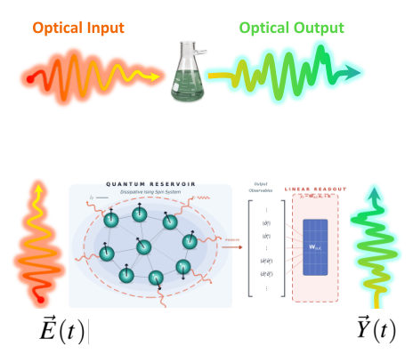
<figcaption class="paper-figure-caption"><b>Fig 1.</b> FIG. 1. Optics as an input–output problem. An input field E(t) (red) interacts with a medium (beaker) to produce an output field Y(t) (green). A quantum Reservoir with trainable readout, the readout layer trained on (E(t),Y(t)) pairs, serves as a surrogate model of the medium, enabling prediction of Y(t) for previously unseen inputs E(t).</figcaption>
</figure>
<figure class="paper-figure-card">
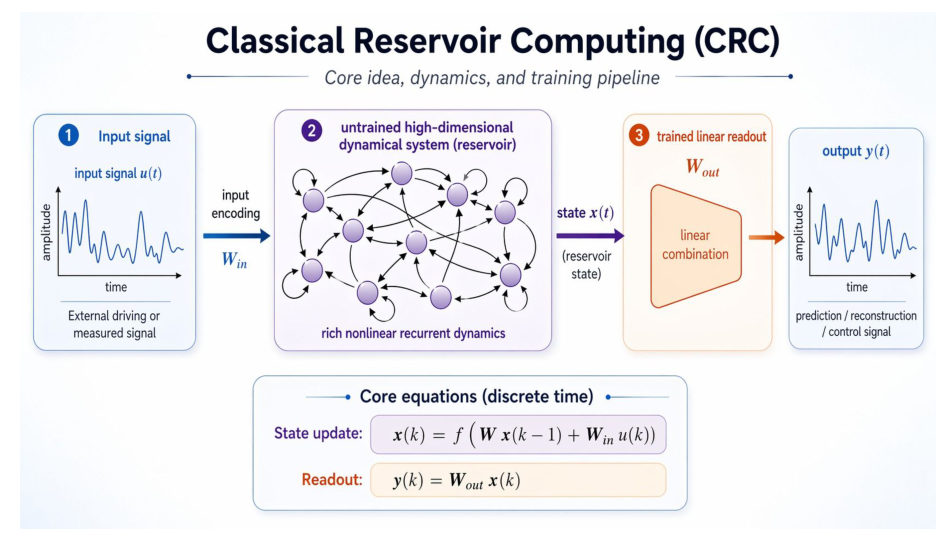
<figcaption class="paper-figure-caption"><b>Fig 2.</b> FIG. 2. Schematic overview of Classical Reservoir Computing (CRC), illustrating the separation between a fixed nonlinear dynamical system (the reservoir) and a trainable linear readout. The input signal u(t) is discretized and injected via the input weight matrixWin. The reservoir state x(k) evolves according to x(k) = f(W x(k −1)+Win u(k)), and the output y(k) is obtained through a trained linear readout y(k) = Wout x(k), where only Wout is optimized during training.</figcaption>
</figure>
<figure class="paper-figure-card">
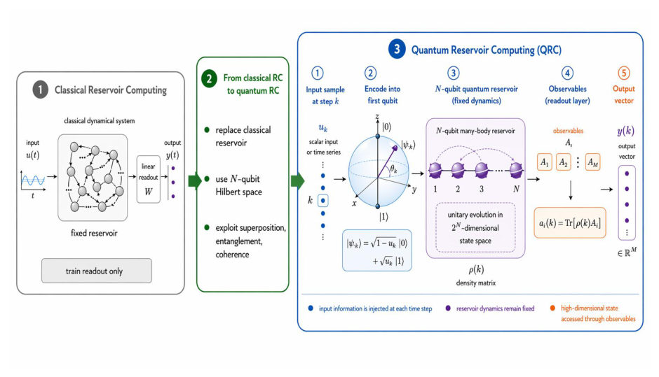
<figcaption class="paper-figure-caption"><b>Fig 3.</b> FIG. 3. Schematic illustration of the transition from classical reservoir computing (CRC) to quantum reservoir computing (QRC). (Left) A classical dynamical system with a fixed reservoir and trained readout layer. (Center) Replacement of the classical reservoir with an N-qubit quantum system. (Right) Full QRC architecture: input is encoded at each time step into the first qubit, the reservoir evolves unitarily in the 2N-dimensional Hilbert space, and observables are extracted via a classical readout layer to produce the output vector.</figcaption>
</figure>
<figure class="paper-figure-card">
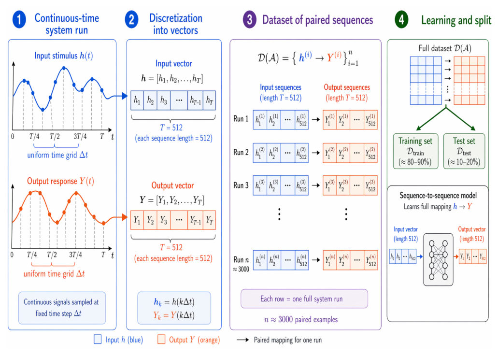
<figcaption class="paper-figure-caption"><b>Fig 4.</b> FIG. 4. Dataset construction and feeding strategy for input–output time-series learning with quantum reservoir computing. Continuous-time input stimuli h(t) and output responses Y(t) are first sampled on a uniform grid with time step ∆t, producing fixed-length vectors of length T = 512. Each row of the dataset corresponds to one complete system run, represented as a paired sequence h(i) →Y(i). The full dataset D(F0) is split into training and test subsets. During learning, each input sequence is fed sequentially into the quantum reservoir, whose measured observables generate temporal reservoir features. A trainable readout then maps these features to the predicted output sequence.</figcaption>
</figure>
<figure class="paper-figure-card">
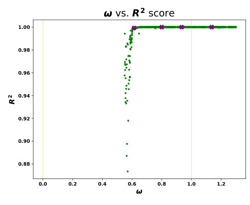
<figcaption class="paper-figure-caption"><b>Fig 5.</b> FIG. 5. Predictive performance of the QRC across driving frequen- cies ω in the single-amplitude regime (F0 = 20). Each point repre- sents the R2 score computed on the test set at a given frequency ω, with an overall performance of R2 = 0.9997.</figcaption>
</figure>
</div>

<p><strong>Summary.</strong> This paper introduces Dissipative Quantum Reservoir Computing (DQRC) as a method to create digital twins for complex quantum systems. By using a small, fixed open quantum system as a reservoir, it learns the input-output map of difficult dynamics, such as High-Harmonic Generation. The results show this approach is highly accurate and generalizes robustly across varying physical driving conditions.</p>
<p><strong>Why it may be interesting.</strong> This work bridges the gap between complex, non-equilibrium quantum dynamics (like HHG) and modern machine learning techniques, proposing a physically constrained, data-driven modeling tool that respects underlying physical principles.</p>
<details>
<summary>Detailed structure</summary>
<p><strong>Main problem.</strong> Modeling the complex, nonlinear, and history-dependent input-output dynamics of driven many-body quantum systems from raw data is computationally prohibitive.</p>
<p><strong>Main result.</strong> A Dissipative Quantum Reservoir Computing (DQRC) framework successfully acts as a compact, physically grounded digital twin, reproducing complex quantum dynamics like High-Harmonic Generation (HHG) using a minimal, fixed quantum reservoir.</p>
<p><strong>Method.</strong> The authors propose using a DQRC, which trains only a classical readout layer while the reservoir dynamics are governed by a fixed, dissipative quantum evolution (Lindblad master equation).</p>
<p><strong>Model / system.</strong> The framework is tested on simulating the input-output mapping of a driven many-body system, exemplified by the High-Harmonic Generation (HHG) process in a medium, and benchmarked against a ten-spin Ising chain.</p>
<p><strong>Key observables.</strong> Reconstruction accuracy ($ ext{R}^2$ score) and amplitude-aware permutation entropy ($ ext{H}_{    ext{amp}}$).</p>
<p><strong>Important parameters / regimes.</strong> Drive amplitude ($F_0$), driving frequency ($\omega$), and the reservoir size (minimal single-qubit reservoir).</p>
<p><strong>Assumptions / limitations.</strong> The study assumes that the essential physics can be captured by mapping the dynamics onto a minimal, fixed, dissipative quantum reservoir, rather than requiring a full simulation of the microscopic Hamiltonian.</p>
<p><strong>Figures summary.</strong> Figures illustrate the input-output problem ($\vec{E}(t) 
ightarrow 	ext{Medium} 
ightarrow \vec{Y}(t)$) and show the amplitude dependence of the entropy ($   ext{H}_{    ext{amp}}$) for the reservoir's generalization capability.</p>
<p><strong>Paper structure.</strong> The paper first establishes the difficulty of modeling quantum dynamics, introduces the DQRC framework by drawing parallels to classical reservoir computing, details the physical implementation using dissipative quantum dynamics, and finally validates the model's generalization capability across varying drive strengths.</p>
</details>
<details>
<summary>Abstract</summary>
<p>Modeling the response of driven many-body quantum systems from input--output data is difficult: the dynamics are nonlinear, history dependent, and expensive to simulate as system size grows. A paradigmatic case is High-Harmonic Generation~(HHG), where a strong field drives a medium to emit radiation that is highly sensitive to the drive and encodes long-range temporal correlations. We introduce a dissipative quantum reservoir computing~(DQRC) framework that builds a digital twin of such a system, learning its input--output map directly from data while the reservoir---itself a small open quantum system---stays fixed and only a classical readout is trained. We show that a minimal single-qubit reservoir reproduces the HHG response of a substantially larger Ising spin chain, and on a representative benchmark matches and on several metrics surpasses previously reported temporal convolutional and Kolmogorov--Arnold-network models, while using a simpler, physically realizable system. A single fixed reservoir further generalizes across a broad range of drives, indicating that it learns a shared physical response structure rather than memorizing trajectories. These results establish dissipative quantum reservoirs as compact, physically grounded digital twins for nonlinear, memory-dependent quantum dynamics.   Code is available at \href{https://github.com/AI-and-Quantum-Computing/DQuRC}{https://github.com/AI-and-Quantum-Computing/DQuRC}.</p>
</details>
<p><sub><a href="#top">↑ back to top</a></sub></p>

<p><a id="paper-2609.35975"></a></p>
<h3 id="deciding-the-attainability-of-the-multiparameter-quantum-fisher-information-is-np-hard">⭐ <a href="http://arxiv.org/abs/2609.35975v1">Deciding the Attainability of the Multiparameter Quantum Fisher Information is NP-Hard</a></h3>
<p><strong>Highlighted author(s):</strong> Alexey V. Gorshkov<br>
<strong>Authors:</strong> Lorcan O. Conlon, Laura Shou, V Vijendran, Kishor Bharti, Aritra Das, Simon K. Yung, Jacob M. Taylor, Alexey V. Gorshkov, Jun Suzuki, Syed M. Assad<br>
<strong>Type:</strong> theory · <strong>Category:</strong> quantum information and computing · <strong>PDF:</strong> <a href="https://arxiv.org/pdf/2609.35975v1">https://arxiv.org/pdf/2609.35975v1</a><br>
<strong>Analysis basis:</strong> full PDF text, analyzed in chunks
<strong>Topic relevance:</strong> <code>quantum measurements</code> <strong>3/5</strong></p>
<div class="figure-strip-hint">↔ Scroll figures horizontally</div>
<div class="paper-figures-scroll">
<figure class="paper-figure-card">
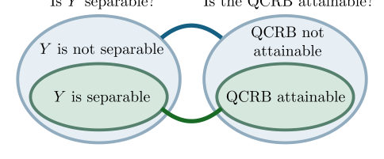
<figcaption class="paper-figure-caption"><b>Fig 1.</b> FIG. 1: Schematic depiction of main results. The left and right outer blue ovals denote the set of all matri- ces Y of a certain dimension and the corresponding set of multiparameter estimation problems defined in Theorem 3 respectively. In this work, we map the problem of deciding whether a given matrix Y is separable or not to the problem of deciding whether the QCRB is attainable (Theorem 3). As it is known that deciding whether a bipartite density matrix is separable or not is NP-hard (Theorem 2), this im- plies that deciding whether the QCRB is attainable or not is also NP-hard (Theorem 4).</figcaption>
</figure>
</div>

<p><strong>Summary.</strong> This paper proves that determining if the theoretical precision limit set by the Quantum Fisher Information (QFI) is actually achievable in quantum parameter estimation is an NP-hard problem. By reducing the problem to the known hard problem of matrix separability, the authors show that a general, efficient criterion for QFI attainability cannot exist unless P=NP.</p>
<p><strong>Why it may be interesting.</strong> This work provides a deep theoretical constraint on quantum metrology, showing that even calculating the best possible precision bound (QFI) does not guarantee that the bound is physically achievable without solving an NP-hard problem.</p>
<details>
<summary>Detailed structure</summary>
<p><strong>Main problem.</strong> The paper addresses the fundamental question of determining whether the precision limit set by the Quantum Fisher Information (QFI) for estimating multiple parameters is actually attainable using individual measurements on a quantum state.</p>
<p><strong>Main result.</strong> They prove that deciding QFI attainability is NP-hard, establishing a fundamental computational barrier: unless P=NP, no efficient general criterion for attainability can exist.</p>
<p><strong>Method.</strong> The proof relies on a polynomial-time reduction from the known NP-hard problem of determining the separability of a bipartite density matrix to the QFI attainability decision problem.</p>
<p><strong>Model / system.</strong> The analysis concerns quantum parameter estimation in a general quantum state $\rho(\theta_1, \dots, \theta_p)$ within a $D$-dimensional Hilbert space, utilizing the framework of Symmetric Logarithmic Derivatives (SLDs).</p>
<p><strong>Key observables.</strong> The Quantum Fisher Information (QFI) matrix ($J_Q$) and the covariance matrix ($V$) derived from the measurement POVM are the key observables used to test the attainability condition $V = J_Q^{-1}$.</p>
<p><strong>Important parameters / regimes.</strong> The number of parameters ($p$), the dimension of the Hilbert space ($D$), and the structure of the quantum model are important parameters.</p>
<p><strong>Assumptions / limitations.</strong> The primary assumption is that the computational complexity class P $\neq$ NP, which underpins the hardness result. The analysis also considers restricted models like real, constant-rank quantum models.</p>
<p><strong>Figures summary.</strong> Figure 1 schematically maps the NP-hard problem of matrix separability to the problem of QCRB attainability, illustrating the reduction used in the proof.</p>
<p><strong>Paper structure.</strong> The paper establishes the QFI bound, frames the attainability as a decision problem, and then constructs a specific quantum encoding model that maps the hard separability problem instance to the QFI attainability question, proving the NP-hardness.</p>
</details>
<details>
<summary>Abstract</summary>
<p>The quantum Fisher information (QFI) sets a fundamental bound on the attainable precision when estimating multiple parameters simultaneously. Incompatibility among the individually optimal measurements can, in some cases, imply that the precision limit set by the QFI is not attainable. In certain special cases, including pure states and full-rank states, the exact conditions for when the precision limit set by the QFI can be saturated are known. However, general conditions for the attainability of the QFI with measurements on individual copies of the quantum state have long been sought. Indeed, this was recently stated as one of the five problems in quantum information theory highlighted by [P. Horodecki et al, PRX Quantum 3, 010101 (2022)]. In this work we prove that exact attainability with individual measurements is NP-hard to decide, even for a restricted set of real, constant-rank quantum models. The source problem for our proof is the NP-hard problem of deciding whether a given bipartite density matrix is separable or not. Our result shows that the longstanding difficulty in obtaining general conditions for QFI attainability reflects a fundamental computational obstruction, rather than merely a limitation of existing mathematical techniques: unless P=NP, no efficiently computable necessary-and-sufficient criterion can exist in general.</p>
</details>
<p><sub><a href="#top">↑ back to top</a></sub></p>

<p><a id="paper-2609.37822"></a></p>
<h3 id="measuring-the-spin-of-a-spin-12-and-getting-a-result-of-7"><a href="http://arxiv.org/abs/2609.37822v1">Measuring the spin of a spin-1/2 and getting a result of 7</a></h3>
<p><strong>Authors:</strong> Joseph McGowan, Nicholas Mantella, Noah Baker, Aephraim M. Steinberg<br>
<strong>Type:</strong> experiment · <strong>Category:</strong> other · <strong>PDF:</strong> <a href="https://arxiv.org/pdf/2609.37822v1">https://arxiv.org/pdf/2609.37822v1</a><br>
<strong>Analysis basis:</strong> full PDF text, analyzed in chunks
<strong>Topic relevance:</strong> 🔥 <code>quantum measurements</code> <strong>5/5</strong> · <code>analog quantum simulation</code> <strong>2/5</strong></p>
<div class="figure-strip-hint">↔ Scroll figures horizontally</div>
<div class="paper-figures-scroll">
<figure class="paper-figure-card">
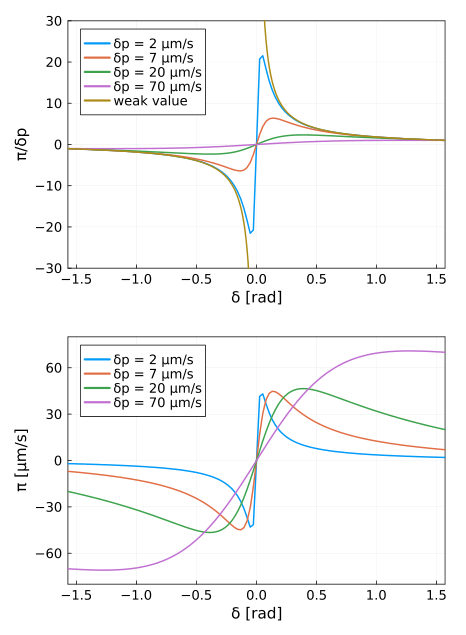
<figcaption class="paper-figure-caption"><b>Fig 1.</b> FIG. 1: Pointer shifts and amplification factors for various values of the momentum kick δp. Above is the bare pointer shift, i.e. ⟨pf⟩|ψ⟩= πf, for the postselected state, and below is πf/δp. Shifts were calculated using TF(z) with σ = 25 µm. The lower plot also shows the weak value ⟨f(δ)| σz |i⟩/ ⟨f(δ)|i⟩.</figcaption>
</figure>
<figure class="paper-figure-card">
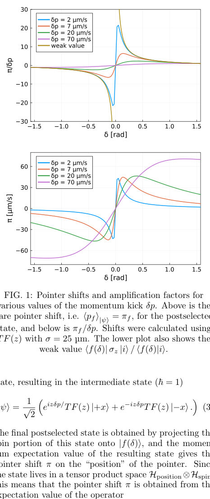
<figcaption class="paper-figure-caption"><b>Fig 2.</b> Figure 1 shows simulations of π for various applied momentum shifts δp, along with the calculated weak value. For this measurement, the pointer shift is given by δp ⟨A⟩w. When δp is large, there is no amplification for any δ; π is bounded by ±δp, and spin rotations merely swap the states. Decreasing δp causes the magnitude of the pointer shift to exceed δp in both directions. The maximum shift, however, is always bounded for small δp;</figcaption>
</figure>
<figure class="paper-figure-card">
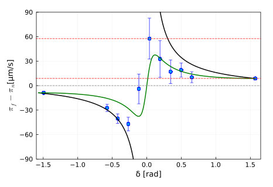
<figcaption class="paper-figure-caption"><b>Fig 3.</b> FIG. 2: Experimental data showing the measured momentum shift (pointer position shift) between the two spin components of the BEC. At each value of δ, each pair of images for a single experimental shot is fitted and the centers subtracted, then this value for all pairs is averaged together. Errorbars represent the standard error on the mean for 60 pairs each. The data are shown with the weak value predictions based on the unamplified kick (in black) and with analytic predictions for a Gaussian initial state of equivalent size (in green).</figcaption>
</figure>
<figure class="paper-figure-card">

<figcaption class="paper-figure-caption"><b>Fig 4.</b> Figure 2 shows experimental data for a cloud with an initial Thomas-Fermi radius of 31 µm, along with the cor- responding weak value prediction as well as the analytic prediction given by eq. (6). The data show reasonable agreement with the weak value, and the amplification of the pointer shift is evident. Each absorption image is fit- ted using a 2D Thomas-Fermi profile. The centers from corresponding image pairs are subtracted, and the re- sulting differences are averaged for each value of δ. This method gives error bars (standard error) which are 5- 10 times smaller than subtracting the averages of the first images and second images. Due to the low post- selection probabilities near δ =...</figcaption>
</figure>
<figure class="paper-figure-card">
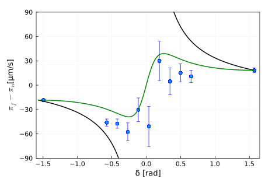
<figcaption class="paper-figure-caption"><b>Fig 5.</b> FIG. 3: Experimental data for a cloud with a similar initial size and atom number to the data in fig. 2 but with a momentum kick approximately 2 times larger (δp = 9.2 ± 0.8 µm s−1). The observed amplification is correspondingly smaller, and the deviation from the weak value prediction (shown in black) occurs sooner. The green curve is calculated from eq. (5) as in fig. 2.</figcaption>
</figure>
</div>

<p><strong>Summary.</strong> The authors report the first experimental realization of measuring an anomalous weak value using a Bose-Einstein condensate of $^{87}	ext{Rb}$ atoms. By performing a weak Stern-Gerlach measurement and utilizing post-selection, they measured a momentum kick amplified by a factor of 14. This work validates the theoretical framework of weak measurements in an atomic platform, demonstrating its potential for advanced quantum sensing.</p>
<p><strong>Why it may be interesting.</strong> This work provides a concrete, state-of-the-art realization of a fundamental quantum measurement concept (weak values) using ultracold atoms, pushing the boundaries of quantum metrology and quantum measurement theory in AMO physics.</p>
<details>
<summary>Detailed structure</summary>
<p><strong>Main problem.</strong> To experimentally realize and measure an anomalous weak value, specifically measuring a component of a particle's spin, as originally proposed by Aharonov et al.</p>
<p><strong>Main result.</strong> The experiment successfully demonstrated weak value amplification in an atomic system, measuring an effective magnification of a weak magnetic momentum kick by a factor of 14, corresponding to a weak value of 7(3) for $\sigma_z$.</p>
<p><strong>Method.</strong> A weak Stern-Gerlach measurement was performed on a Bose-Einstein condensate using post-selection on the final state to extract the anomalous weak value.</p>
<p><strong>Model / system.</strong> The physical system is a Bose-Einstein condensate (BEC) of $^{87}	ext{Rb}$ atoms trapped in a magnetic gradient. The measurement relies on coupling the spin and momentum via a weak magnetic field gradient.</p>
<p><strong>Key observables.</strong> Pointer shift ($\pi$), weak value ($\langle A 
angle_w$), and the momentum kick ($\delta_p$).</p>
<p><strong>Important parameters / regimes.</strong> The measurement is sensitive to the momentum kick parameter ($\delta$) and the initial cloud size ($\sigma$).</p>
<p><strong>Assumptions / limitations.</strong> The analysis often assumes the initial state is Gaussian for analytical predictions, although the actual atomic cloud profile may deviate.</p>
<p><strong>Figures summary.</strong> Figure 2 shows experimental data comparing the measured momentum shift to weak value predictions for a specific initial size. Figure 3 shows similar results for a larger momentum kick, illustrating the dependence on applied parameters.</p>
<p><strong>Paper structure.</strong> The paper develops the theory of weak value amplification, details the experimental setup using BECs, presents the measurement of the pointer shift, and compares the results to the theoretical weak value predictions across varying experimental parameters.</p>
</details>
<details>
<summary>Abstract</summary>
<p>The weak value of an operator is the average result of measuring that operator on a quantum system given specified initial and final states. The overlap between these states appears in the denominator of the weak value, and thus if that overlap is small, the weak value can be arbitrarily large. In 1988, Albert, Aharonov, and Vaidman proposed a weak Stern-Gerlach experiment which would be able to measure a so-called anomalous weak value, a measurement result which lies out- side of the eigenvalue spectrum of the operator being measured. Though anomalous weak values have been measured in numerous optical systems, here we present the first such realization of this experiment as originally proposed. By placing a Bose-Einstein condensate of 87Rb in a magnetic gradient and performing an unlikely postselection, we measure an effective magnification of a weak magnetic momentum kick (~ 8 $μ$m/s) by a factor of 14. We also demonstrate that increasing the momentum kick decreases the "weakness" of the measurement and reduces the amplification.</p>
</details>
<p><sub><a href="#top">↑ back to top</a></sub></p>

<p><a id="paper-2609.37149"></a></p>
<h3 id="a-quantum-thermal-machine-surpassing-the-classical-thermodynamic-limit-on-precision"><a href="http://arxiv.org/abs/2609.37149v1">A quantum thermal machine surpassing the classical thermodynamic limit on precision</a></h3>
<p><strong>Authors:</strong> Simon Sundelin, Ludvig Nordqvist, Khalak Mahadeviya, Vyom Kulkarni, Mohammed Ali Aamir, Mark T. Mitchison, Simone Gasparinetti<br>
<strong>Type:</strong> experiment · <strong>Category:</strong> statistical mechanics · <strong>PDF:</strong> <a href="https://arxiv.org/pdf/2609.37149v1">https://arxiv.org/pdf/2609.37149v1</a><br>
<strong>Analysis basis:</strong> full PDF text, analyzed in chunks
<strong>Topic relevance:</strong> 🔥 <code>quantum optics experiment</code> <strong>4/5</strong> · <code>QC/QI experiment</code> <strong>3/5</strong> · <code>driven-dissipative phase transition</code> <strong>3/5</strong> · <code>non-equilibrium universality</code> <strong>3/5</strong> · <code>Full counting statistics</code> <strong>2/5</strong> · <code>quantum measurements</code> <strong>2/5</strong> · <code>Keldysh / 2PI / non-Gaussian methods</code> <strong>1/5</strong> · <code>Tavis-Cummings &amp; cavity-many-emitter</code> <strong>1/5</strong> · <code>analog quantum simulation</code> <strong>1/5</strong> · <code>correlated / nonlocal dissipation</code> <strong>1/5</strong> · <code>methods for driven-dissipative</code> <strong>1/5</strong></p>
<div class="figure-strip-hint">↔ Scroll figures horizontally</div>
<div class="paper-figures-scroll">
<figure class="paper-figure-card">
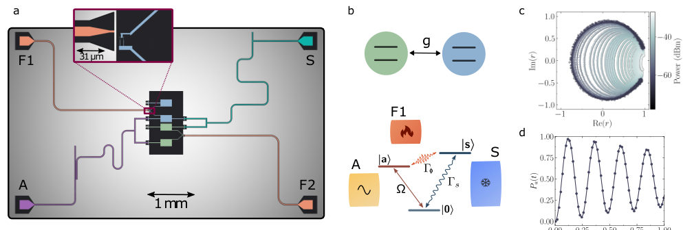
<figcaption class="paper-figure-caption"><b>Fig 1.</b> FIG. 1. Device architecture and operating principle. (a) Rendered false-colour micrograph of the superconducting artificial molecule, composed of two flux-tunable transmons coupled to symmetry-selective microwave waveguides S and A. The flux lines used to inject longitudinal noise are shown in orange. Inset: superconducting quantum interference device (SQUID) of one transmon. (b) Hybridized level structure and transport cycle of the artificial molecule. |0⟩, |a⟩, and |s⟩denote the ground, antisymmetric, and symmetric molecular eigenstates, respectively. The upper-state splitting is 2g, where g is the coherent inter-qubit coupling strength. A coherent drive with Rabi frequency Ωexcites the...</figcaption>
</figure>
<figure class="paper-figure-card">
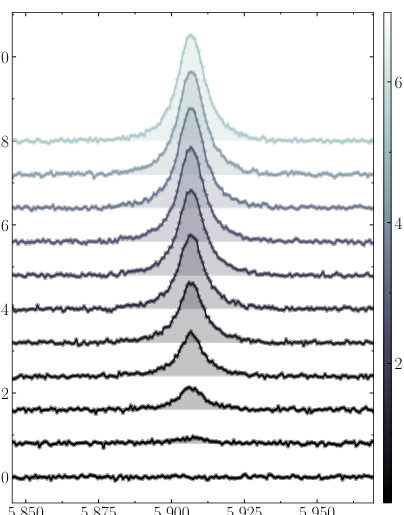
<figcaption class="paper-figure-caption"><b>Fig 2.</b> FIG. 2. Power spectral density of the output field in the symmetric waveguide for increasing mixing rates at a fixed drive rate. The growing emission peak signals heat transferred into the cold bath, and its integrated area yields the emitted heat current.</figcaption>
</figure>
<figure class="paper-figure-card">
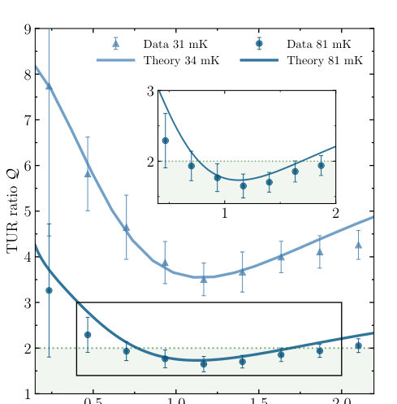
<figcaption class="paper-figure-caption"><b>Fig 3.</b> FIG. 4. Violation of the classical thermodynamic uncertainty relation. Measured TUR ratio Q = (σ/kB)D/J2 as a function of drive strength for cold-bath temperatures of 31 mK and 81 mK. The dashed line marks the classical bound Q = 2. At 81 mK, the measured ratio falls below the classical threshold and enters the sub-classical regime predicted by full counting statistics (see inset for the same data on a larger scale). Solid lines show theoretical results evaluated using independently characterized device parameters, and error bars denote two standard deviations.</figcaption>
</figure>
<figure class="paper-figure-card">
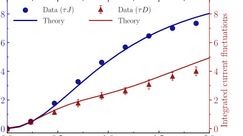
<figcaption class="paper-figure-caption"><b>Fig 4.</b> FIG. 3. Extraction of photon-current moments from con- tinuous microwave measurements. (a) Interleaved ON/OFF protocol used to determine the first and second moments of the integrated heterodyne power. In the ON state, the co- herent drive and injected flux noise sustain transport through the machine, whereas the OFF state provides the background reference of the measurement chain. (b) Measured integrated current τJ (circles) and current fluctuations τD (triangles) as functions of drive strength over the integration time τ = 3 µs and a fixed mixing rate ΓΦ/2π = 3.4 MHz. Solid lines show full counting statistics predictions evaluated using indepen- dently characterized device parameters and...</figcaption>
</figure>
<figure class="paper-figure-card">
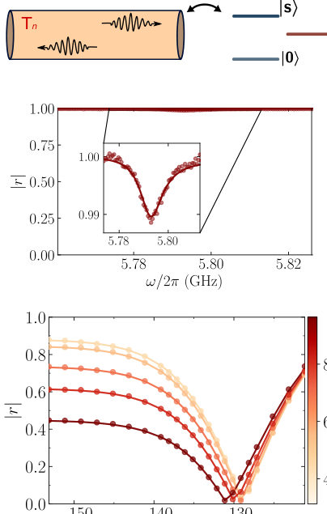
<figcaption class="paper-figure-caption"><b>Fig 5.</b> FIG. 5. Cold-bath temperature calibration based on a four- level molecular spectroscopy model. (a) Schematic of the four-level model. The waveguide at temperature Tn cou- ples radiatively, with rate ΓS, to the symmetric transitions |0⟩↔|s⟩and |s⟩↔|2+⟩L, while the antisymmetric state |a⟩remains dark to the waveguide but is weakly coupled to an environment at a similar temperature. Finite tempera- ture produces thermal population in both |s⟩and |a⟩. (b) Method A: reflection spectroscopy of the |s⟩↔|2+⟩L transi- tion at elevated temperature, obtained by sweeping the probe frequency across the transition. The solid line is a fit to the four-level model used to determine the effective waveguide...</figcaption>
</figure>
</div>

<p><strong>Summary.</strong> This paper experimentally demonstrates that a superconducting quantum thermal machine can surpass the precision limits imposed by classical thermodynamics, violating the canonical Thermodynamic Uncertainty Relation. By measuring current fluctuations and heat dissipation in a superconducting circuit, the authors show a quantum enhancement in performance at reduced energy cost. This work highlights a fundamental distinction between classical and quantum thermodynamic regimes.</p>
<p><strong>Why it may be interesting.</strong> This work provides a direct, measurable experimental test of fundamental quantum thermodynamic principles, demonstrating a quantum enhancement in precision beyond classical limits, which is highly relevant to open quantum systems and quantum thermodynamics.</p>
<details>
<summary>Detailed structure</summary>
<p><strong>Main problem.</strong> The paper investigates whether quantum mechanics allows for the violation of the classical Thermodynamic Uncertainty Relation (TUR), which constrains the trade-off between precision and energy cost in non-equilibrium processes.</p>
<p><strong>Main result.</strong> The authors experimentally demonstrated a violation of the classical TUR in a superconducting quantum thermal machine, measuring a ratio $Q = 1.71 \pm 0.17$, which is below the classical bound of $Q \geq 2$.</p>
<p><strong>Method.</strong> The experiment uses near-quantum-limited heterodyne detection on a superconducting quantum thermal machine to measure the mean photon current and its fluctuations, allowing for the extraction of the TUR ratio $Q$.</p>
<p><strong>Model / system.</strong> The system is a superconducting quantum thermal machine built from two flux-tunable transmon qubits forming an artificial molecule, coupled to a cold microwave waveguide bath and driven by classical noise.</p>
<p><strong>Key observables.</strong> TUR Ratio ($Q$), mean photon current ($J$), and the diffusion coefficient ($D$) extracted from the Power Spectral Density (PSD) of the outgoing microwave field.</p>
<p><strong>Important parameters / regimes.</strong> The measurement is performed at dilution refrigerator temperatures ($T < 10 	ext{ mK}$); the classical bound is $Q \geq 2$.</p>
<p><strong>Assumptions / limitations.</strong> The classical TUR assumptions (classical Markovian dynamics obeying local detailed balance) are assumed to break down in the quantum regime; the analysis relies on input-output theory and heterodyne detection techniques.</p>
<p><strong>Figures summary.</strong> Figures illustrate the device architecture, the transport cycle, the PSD of the output field showing emission peaks, and plots showing the measured TUR ratio $Q$ versus drive strength.</p>
<p><strong>Paper structure.</strong> The paper establishes the theoretical context of TURs, details the superconducting quantum thermal machine setup, describes the measurement protocol using heterodyne detection to extract current and noise moments, and finally presents the experimental measurement showing the violation of the classical bound.</p>
</details>
<details>
<summary>Abstract</summary>
<p>Precision in nonequilibrium processes comes at a thermodynamic cost: suppressing fluctuations generally requires increased dissipation. Thermodynamic uncertainty relations (TURs) make this trade-off quantitative by linking current fluctuations to entropy production in classical stochastic dynamics. In the decade since its discovery, the canonical steady-state TUR and its finite-time generalizations have become a cornerstone of non-equilibrium thermodynamics, constraining the performance of molecular machines and allowing heat dissipation to be inferred from observable fluctuations. Whether the canonical TUR can be violated in a controlled quantum device remains an outstanding experimental question, in part because doing so requires resolving extremely small steady-state currents as well as their fluctuations. Here we experimentally show that steady-state quantum transport can surpass the precision permitted by the canonical TUR. We observe this violation in a superconducting quantum thermal machine coupled to a microwave waveguide acting as a cold bath and to a classical noise source providing an effective infinite-temperature bath. We observe a TUR ratio $Q = 1.71 \pm 0.17$, in violation of the classical bound $Q \geq 2$. Our results demonstrate a fundamental distinction between classical and quantum thermodynamics, paving the way for quantum thermal devices that achieve enhanced precision at reduced energy cost.</p>
</details>
<p><sub><a href="#top">↑ back to top</a></sub></p>

<p><a id="paper-2609.36658"></a></p>
<h3 id="single-photon-nonlinearity-from-a-nanobeam-with-a-quantum-dot"><a href="http://arxiv.org/abs/2609.36658v1">Single-Photon Nonlinearity from a Nanobeam with a Quantum Dot</a></h3>
<p><strong>Authors:</strong> Abhijit Biswas, Neelesh Kumar Vij, Allan S. Bracker, Margaret Stevens, Joel Q. Grim, Edo Waks<br>
<strong>Type:</strong> experiment · <strong>Category:</strong> other · <strong>PDF:</strong> <a href="https://arxiv.org/pdf/2609.36658v1">https://arxiv.org/pdf/2609.36658v1</a><br>
<strong>Analysis basis:</strong> full PDF text, analyzed in chunks
<strong>Topic relevance:</strong> 🔥 <code>quantum optics experiment</code> <strong>4/5</strong> · <code>QC/QI experiment</code> <strong>3/5</strong> · <code>analog quantum simulation</code> <strong>3/5</strong> · <code>Tavis-Cummings &amp; cavity-many-emitter</code> <strong>2/5</strong> · <code>driven-dissipative phase transition</code> <strong>2/5</strong> · <code>methods for driven-dissipative</code> <strong>2/5</strong> · <code>quantum measurements</code> <strong>2/5</strong> · <code>Full counting statistics</code> <strong>1/5</strong> · <code>Keldysh / 2PI / non-Gaussian methods</code> <strong>1/5</strong> · <code>correlated / nonlocal dissipation</code> <strong>1/5</strong></p>
<div class="figure-strip-hint">↔ Scroll figures horizontally</div>
<div class="paper-figures-scroll">
<figure class="paper-figure-card">
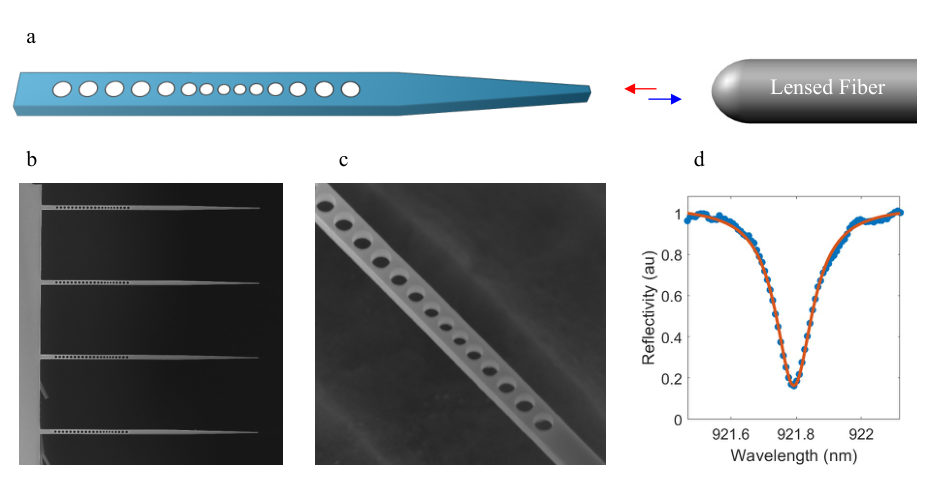
<figcaption class="paper-figure-caption"><b>Fig 1.</b> Figure 1: Design and characterization of the nanobeam cavity. (a) Schematic of a nanobeam cavity with a tapered waveguide edge. (b) SEM image of suspended nanobeams from the top. (c) SEM image showing the cavity region. (d) Cavity reflectivity spectrum for cavity-mode characterization.</figcaption>
</figure>
<figure class="paper-figure-card">
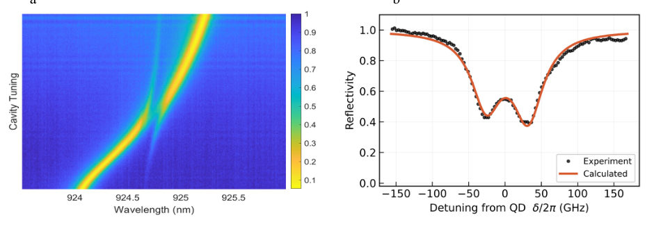
<figcaption class="paper-figure-caption"><b>Fig 2.</b> Figure 2: Strong coupling between the cavity and the quantum dot. (a) Normalized cavity reflectivity under LED excitation while the cavity is tuned across the quantum dot emission wavelength. (b) Normalized cavity reflectivity with the quantum dot on resonance.</figcaption>
</figure>
<figure class="paper-figure-card">
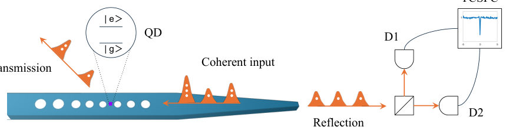
<figcaption class="paper-figure-caption"><b>Fig 3.</b> Figure 3: Resonant reflection from the cavity-quantum dot system. At low photon number, the single-photon components of the incident light are preferentially reflected, while multi-photon components are transmitted.</figcaption>
</figure>
<figure class="paper-figure-card">
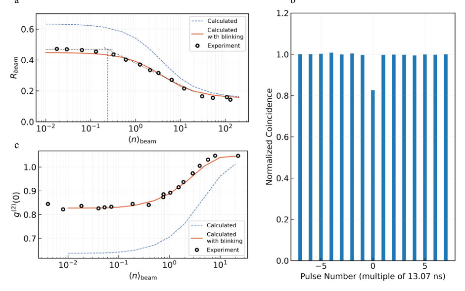
<figcaption class="paper-figure-caption"><b>Fig 4.</b> Figure 4: Single-photon nonlinearity. (a) Reflectivity from the nanobeam as a function of ⟨n⟩beam (b) Second- order autocorrelation measurement of the reflected signal for ⟨n⟩beam = 0.06. (c) Measured g2(0) as a function of incident photon number in the nanobeam, ⟨n⟩beam.</figcaption>
</figure>
</div>

<p><strong>Summary.</strong> This paper reports the realization of single-photon nonlinearity using a quantum dot embedded in a nanobeam cavity. The key innovation is the nanobeam geometry, which allows for high-efficiency coupling to optical fibers while maintaining strong coupling to the quantum emitter. The demonstrated low-threshold nonlinearity establishes this system as a promising, scalable component for quantum photonic circuits.</p>
<p><strong>Why it may be interesting.</strong> This work is highly relevant as it combines cavity QED principles (strong coupling, nonlinearity) with practical engineering challenges (fiber coupling, chip integration), providing a robust platform for quantum light sources.</p>
<details>
<summary>Detailed structure</summary>
<p><strong>Main problem.</strong> The primary challenge addressed is developing an efficient single-photon nonlinearity for quantum technologies that simultaneously achieves high-efficiency direct fiber coupling and compatibility with scalable on-chip integration.</p>
<p><strong>Main result.</strong> The researchers successfully demonstrated a single-photon nonlinearity in a nanobeam cavity coupled to a quantum dot, establishing the system as a compact, chip-integrable, and fiber-compatible building block.</p>
<p><strong>Method.</strong> The nonlinearity was characterized by measuring the cavity reflectivity using weak, resonant picosecond pulses and analyzing the second-order correlation function, $g^{(2)}(0)$.</p>
<p><strong>Model / system.</strong> The physical system is a quantum dot coupled to a nanobeam cavity, modeled using the Jaynes-Cummings Hamiltonian and analyzed via the Lindblad master equation. The nanobeam geometry facilitates direct coupling to a single-mode fiber.</p>
<p><strong>Key observables.</strong> Single-photon nonlinearity threshold (0.24 incident photons per pulse), coupling rate ($g/2\pi = 29.1$ GHz), cooperativity ($C = 3.98$), and $g^{(2)}(0)$ measurements.</p>
<p><strong>Important parameters / regimes.</strong> Fiber coupling efficiency ($\eta_{	ext{coupling}} = 60\%$), cavity decay rate ($\kappa$), and the strong-coupling regime condition ($g > \kappa_1/4$).</p>
<p><strong>Assumptions / limitations.</strong> The analysis assumes that linear loss does not alter the underlying photon statistics when calculating $g^{(2)}(0)$ for the integrated system.</p>
<p><strong>Figures summary.</strong> Figures show the nanobeam design, SEM images, cavity reflectivity spectra exhibiting polariton doublets, and plots detailing reflectivity and $g^{(2)}(0)$ vs. input photon number.</p>
<p><strong>Paper structure.</strong> The paper details the physical setup, characterizes the cavity and QD coupling parameters using CW light, and then measures the nonlinear response using pulsed excitation to confirm single-photon nonlinearity.</p>
</details>
<details>
<summary>Abstract</summary>
<p>An efficient single-photon nonlinearity is a key resource for photonic quantum technologies. Single-photon nonlinearities have been demonstrated with quantum dots (QDs) across a range of cavity and waveguide geometries. However, none of these realizations simultaneously provide high-efficiency direct fiber coupling and compatibility with scalable on-chip integration. The nanobeam cavity addresses these limitations through its in-plane geometry, which enables highly efficient, direct fiber coupling alongside scalable homogeneous and heterogeneous on-chip integration. Here, we report a single-photon nonlinearity from a nanobeam cavity coupled to a single quantum dot. The nanobeam interfaces directly with a single-mode fiber with an efficiency of 60%. Driven by resonant picosecond pulses, the platform achieves a single-photon nonlinearity with a low threshold of 0.24 incident photons per pulse. The system operates in the strong-coupling regime, exhibiting a coupling rate of g/2π = 29.1 GHz and a cooperativity of C = 3.98. These results establish the nanobeam cavity-QD system as a compact, chip-integrable, and fiber-compatible building block for scalable photonic quantum technologies.</p>
</details>
<p><sub><a href="#top">↑ back to top</a></sub></p>

<p><a id="paper-2609.36017"></a></p>
<h3 id="independent-density-and-coherence-skin-effects-in-adaptive-fermion-circuits"><a href="http://arxiv.org/abs/2609.36017v1">Independent density and coherence skin effects in adaptive fermion circuits</a></h3>
<p><strong>Authors:</strong> Karim Chahine, Markus Siegl, Michael Buchhold<br>
<strong>Type:</strong> theory · <strong>Category:</strong> other · <strong>PDF:</strong> <a href="https://arxiv.org/pdf/2609.36017v1">https://arxiv.org/pdf/2609.36017v1</a><br>
<strong>Analysis basis:</strong> full PDF text, analyzed in chunks
<strong>Topic relevance:</strong> 🔥 <code>methods for driven-dissipative</code> <strong>4/5</strong> · 🔥 <code>quantum measurements</code> <strong>4/5</strong> · <code>analog quantum simulation</code> <strong>3/5</strong> · <code>correlated / nonlocal dissipation</code> <strong>3/5</strong> · <code>driven-dissipative phase transition</code> <strong>3/5</strong> · <code>non-equilibrium universality</code> <strong>2/5</strong> · <code>Keldysh / 2PI / non-Gaussian methods</code> <strong>1/5</strong></p>
<div class="figure-strip-hint">↔ Scroll figures horizontally</div>
<div class="paper-figures-scroll">
<figure class="paper-figure-card">
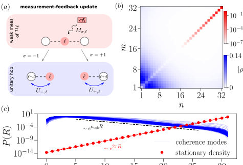
<figcaption class="paper-figure-caption"><b>Fig 1.</b> Figure 1. Two skin effects at opposite edges of one adaptive circuit (τ = 0.5, L = 32, d = 1, balanced pair, θ = 1). (a) Adaptive measurement-feedback update. A weak measure- ment of the occupation at site ℓyields σ = ±1 and selects a coherent hopping operation on the bond (ℓ−d, ℓ) for σ = −1 or (ℓ, ℓ+ d) for σ = +1. (b) Weight ⟨|ρm,n|⟩averaged over the coherence modes defined in [43] (blue) and the stationary state (red), from exact diagonalization of the Liouvillian; each mode is normalized to P</figcaption>
</figure>
<figure class="paper-figure-card">
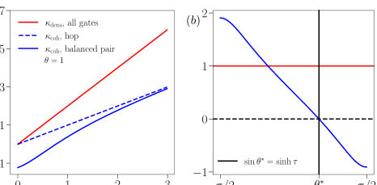
<figcaption class="paper-figure-caption"><b>Fig 2.</b> Figure 2. Analytical density (red) and bulk-coherence (blue) exponents against the control parameters of the circuit; d = 1. (a) Versus measurement strength τ. Dashed: conditioned hop, κcoh = κdens/2. Solid: balanced pair at θ = 1. (b) Versus the phase θ at τ = 0.5 for the balanced pair. As θ = γ+ −γ− is tuned, κcoh passes through zero at sin θ∗= sinh τ, while the density exponent is unaffected.</figcaption>
</figure>
<figure class="paper-figure-card">
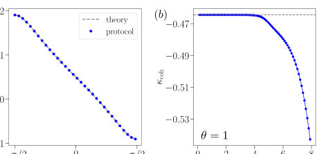
<figcaption class="paper-figure-caption"><b>Fig 3.</b> Figure 3. The differential protocol at finite time (L = 28, r = 6, τ = 0.5, d = 1, balanced pair). (a) Exponent extracted from Eq. (18) at t = 2 (circles) and the prediction of Eq. (12) (dashed). (b) Extracted exponent against time at θ = 1; dashed: Eq. (12).</figcaption>
</figure>
<figure class="paper-figure-card">
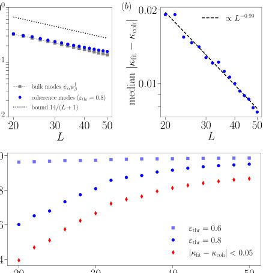
<figcaption class="paper-figure-caption"><b>Fig 4.</b> Figure 4. Convergence of the coherence modes of the full open-chain Liouvillian to the bulk exponent (balanced pair, τ = 0.5, θ = 1, d = 1). (a) Median gauged defect weight wd of the coherence modes [Eq. (20), εthr = 0.8] and of the eigen- modes ψαψ† β of Lbulk; dotted: the bound 14/(L + 1). (b) Me- dian |κfit −κcoh| of the coherence modes; dashed: power-law fit. (c) Number N of eigenmodes satisfying Eq. (20) for εthr = 0.6 (squares) and 0.8 (circles), and with |κfit −κcoh| &lt; 0.05 (diamonds), divided by L2.</figcaption>
</figure>
</div>

<p><strong>Summary.</strong> This paper analyzes adaptive fermion circuits to show that density and coherence localization effects can be tuned independently. By analyzing the system's Liouvillian dynamics, the authors derive separate exponents for density and coherence profiles. This separation is significant because it allows for engineered localization of these two distinct physical properties at opposite ends of the chain.</p>
<p><strong>Why it may be interesting.</strong> This work provides a concrete, controllable platform (adaptive circuits) to study the separation of different types of localization effects (density vs. coherence) in open quantum systems, which is highly relevant to understanding dissipation and measurement backaction in quantum dynamics.</p>
<details>
<summary>Detailed structure</summary>
<p><strong>Main problem.</strong> To investigate whether density and coherence skin effects can be independently tuned in adaptive fermion circuits, unlike previous models where they were coupled.</p>
<p><strong>Main result.</strong> The density skin effect exponent is fixed by measurement strength and feedback displacement, while the coherence exponent can be tuned independently by controlling the relative occupation phase, allowing opposite-edge localization.</p>
<p><strong>Method.</strong> The analysis uses Liouvillian dynamics, employing gauge transformations and exponential ansatz fitting to extract the decay exponents for both density and coherence profiles.</p>
<p><strong>Model / system.</strong> The system models spinless fermions on a chain evolving under a trace-preserving Liouvillian governed by measurement-feedback updates, $\partial_t \hat{
ho} = \mathcal{L}\hat{
ho}$.</p>
<p><strong>Key observables.</strong> Density skin effect exponent ($\kappa_{	ext{dens}}$), coherence skin effect exponent ($\kappa_{	ext{coh}}$), and the stationary density profile $
ho_{n_R}$.</p>
<p><strong>Important parameters / regimes.</strong> Measurement strength ($ au$), feedback displacement ($d$), and the relative occupation phase ($ heta$).</p>
<p><strong>Assumptions / limitations.</strong> The analysis assumes an exponential ansatz for the stationary density state and utilizes gauge transformations to map the non-reciprocal dynamics to a normal form for coherence analysis.</p>
<p><strong>Figures summary.</strong> Figures illustrate the adaptive measurement-feedback update, showing density and coherence profiles at opposite edges, and plot the dependence of $\kappa_{	ext{coh}}$ and $\kappa_{	ext{dens}}$ on control parameters $    au$ and $   heta$.</p>
<p><strong>Paper structure.</strong> The paper first establishes the Liouvillian framework for adaptive circuits, then derives the independent expressions for $\kappa_{	ext{dens}}$ and $\kappa_{	ext{coh}}$, demonstrating their tunability and the mechanism allowing opposite-edge localization.</p>
</details>
<details>
<summary>Abstract</summary>
<p>Adaptive circuits use measurements and outcome-conditioned feedback to implement nonreciprocal dynamics without postselection. We show that fermion circuits host independently tunable density and coherence skin effects. The stationary state has an exact density tilt set only by measurement strength and feedback displacement: conditioned-gate details cancel, yielding an exponential one-particle profile and, at any filling, a tilted ensemble of configuration weights. Decaying coherences instead obey, in the bulk, an effective Hatano-Nelson generator controlled by the conditioned gates through a relative occupation phase. Tuning this phase drives a point-gap topological transition and reverses coherence localization at fixed density, allowing density and coherence to localize at opposite edges. We derive both exponents for conditioned $U(2)$ gates and propose a correlator-ratio probe using ensemble-averaged observables.</p>
</details>
<p><sub><a href="#top">↑ back to top</a></sub></p>

<p><a id="paper-2609.36476"></a></p>
<h3 id="crossover-of-scaling-behaviors-of-work-cumulants-in-a-driven-gaussian-field-theory"><a href="http://arxiv.org/abs/2609.36476v1">Crossover of Scaling Behaviors of Work Cumulants in a Driven Gaussian Field Theory</a></h3>
<p><strong>Authors:</strong> Yanbo Qiao, Ruohan Xu, H. T. Quan<br>
<strong>Type:</strong> theory · <strong>Category:</strong> statistical mechanics · <strong>PDF:</strong> <a href="https://arxiv.org/pdf/2609.36476v1">https://arxiv.org/pdf/2609.36476v1</a><br>
<strong>Analysis basis:</strong> full PDF text, analyzed in chunks
<strong>Topic relevance:</strong> 🔥 <code>non-equilibrium universality</code> <strong>4/5</strong> · <code>Keldysh / 2PI / non-Gaussian methods</code> <strong>3/5</strong> · <code>driven-dissipative phase transition</code> <strong>3/5</strong> · <code>Full counting statistics</code> <strong>2/5</strong> · <code>methods for driven-dissipative</code> <strong>2/5</strong> · <code>analog quantum simulation</code> <strong>1/5</strong> · <code>correlated / nonlocal dissipation</code> <strong>1/5</strong> · <code>quantum measurements</code> <strong>1/5</strong></p>
<div class="figure-strip-hint">↔ Scroll figures horizontally</div>
<div class="paper-figures-scroll">
<figure class="paper-figure-card">
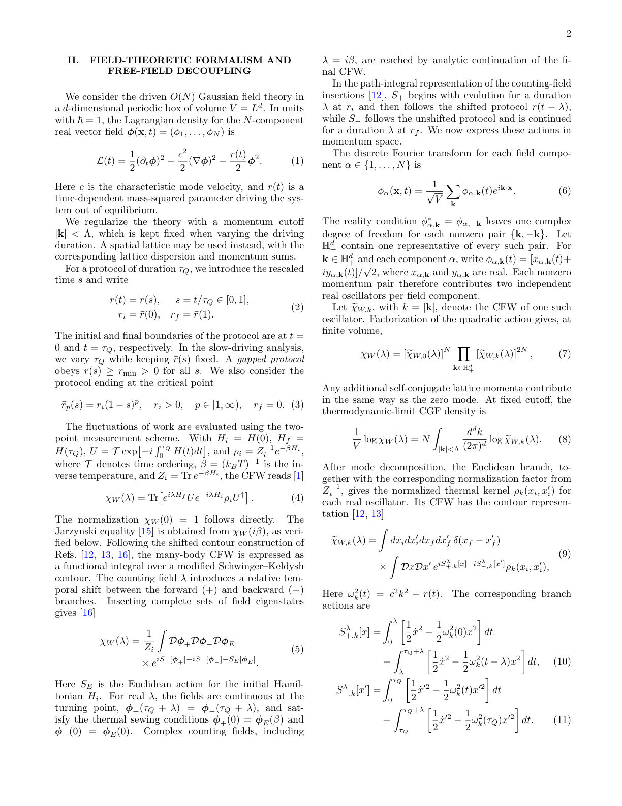
<figcaption class="paper-figure-caption"><b>Fig 1.</b> Low-resolution page preview, page 2</figcaption>
</figure>
<figure class="paper-figure-card">
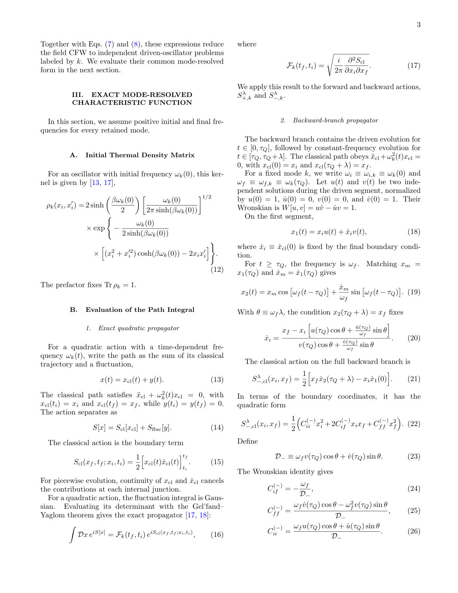
<figcaption class="paper-figure-caption"><b>Fig 2.</b> Low-resolution page preview, page 3</figcaption>
</figure>
<figure class="paper-figure-card">
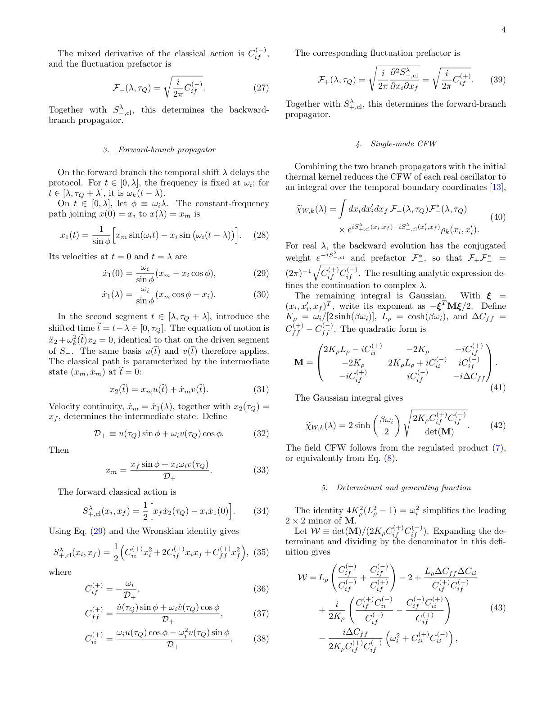
<figcaption class="paper-figure-caption"><b>Fig 3.</b> Low-resolution page preview, page 4</figcaption>
</figure>
<figure class="paper-figure-card">
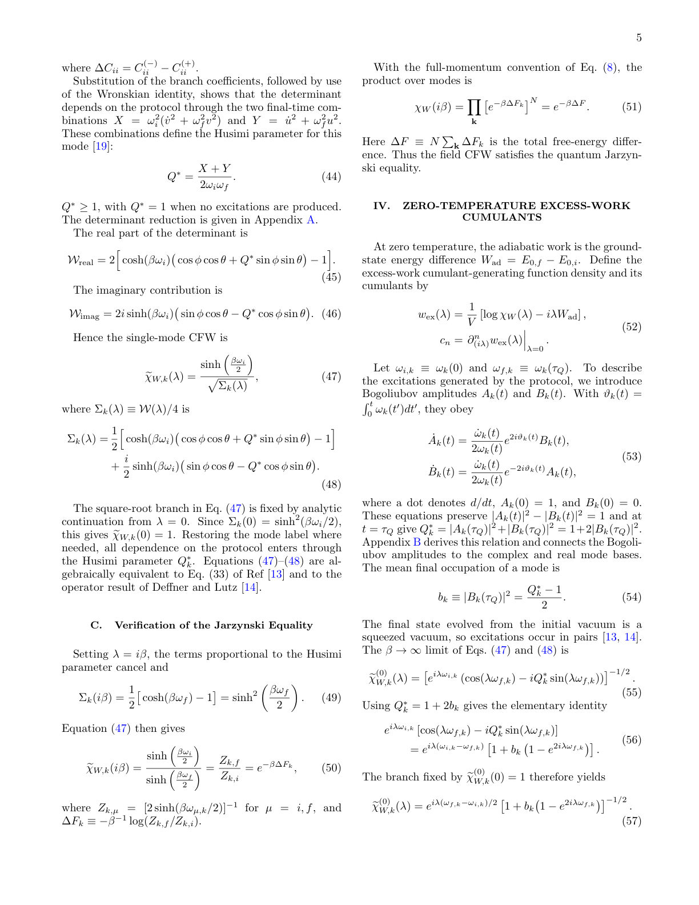
<figcaption class="paper-figure-caption"><b>Fig 4.</b> Low-resolution page preview, page 5</figcaption>
</figure>
<figure class="paper-figure-card">
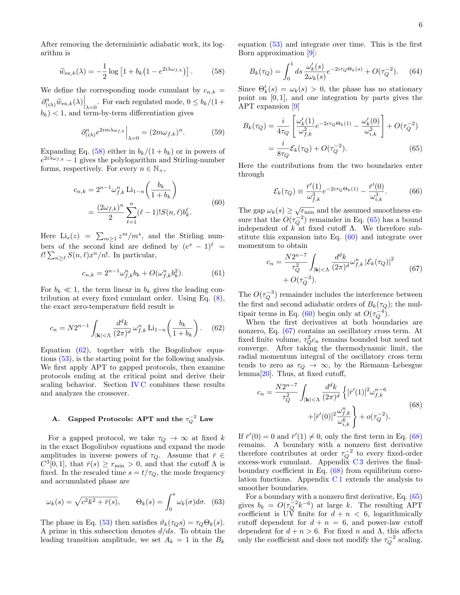
<figcaption class="paper-figure-caption"><b>Fig 5.</b> Low-resolution page preview, page 6</figcaption>
</figure>
</div>

<p><strong>Summary.</strong> This theoretical paper analyzes how work fluctuations scale when a quantum system is driven through a time-dependent process, comparing predictions from the Kibble-Zurek mechanism (critical dynamics) against those from Adiabatic Perturbation Theory (smooth driving). By solving the problem for a Gaussian field theory, the authors map out the precise crossover scaling laws governing the excess-work cumulants. This work provides a foundational, solvable model for understanding non-equilibrium thermodynamics in complex quantum systems.</p>
<p><strong>Why it may be interesting.</strong> The explicit derivation of crossover scaling laws for work cumulants provides a powerful, solvable model to test general theoretical frameworks concerning non-equilibrium dynamics and critical phenomena in quantum systems.</p>
<details>
<summary>Detailed structure</summary>
<p><strong>Main problem.</strong> The paper investigates the crossover between different scaling behaviors of work cumulants in a driven quantum system, specifically comparing the Kibble-Zurek (KZ) mechanism with the Adiabatic Perturbation Theory (APT) predictions.</p>
<p><strong>Main result.</strong> The scaling of the excess-work cumulants depends on the relative exponents of the protocol and the dimensionality, exhibiting distinct power-law behaviors, including logarithmic corrections at specific crossover points.</p>
<p><strong>Method.</strong> The analysis utilizes path integral formulations, mode decomposition, and advanced scaling arguments derived from solving the mode equations for the Gaussian field theory.</p>
<p><strong>Model / system.</strong> The system is a driven O(N) Gaussian field theory in a d-dimensional box, whose dynamics are governed by a time-dependent Lagrangian density. The analysis focuses on the work cumulants derived from the Characteristic Function of Work (CFW).</p>
<p><strong>Key observables.</strong> Work cumulants (excess-work cumulants $c_n$), Characteristic Function of Work (CFW), and the Husimi parameter ($Q^*$).</p>
<p><strong>Important parameters / regimes.</strong> Protocol exponent ($p$), spatial dimension ($d$), order of cumulant ($n$), and protocol duration ($    au_Q$).</p>
<p><strong>Assumptions / limitations.</strong> The analysis relies on the solvability of the Gaussian field theory and the validity of both the APT and KZ approximations in different regimes.</p>
<p><strong>Paper structure.</strong> The paper systematically derives the CFW for the Gaussian field, first analyzing gapped protocols using APT, and then tackling power-law protocols approaching criticality by comparing the resulting KZ scaling with the regular APT contributions.</p>
</details>
<details>
<summary>Abstract</summary>
<p>We derive the finite-temperature characteristic function of work (CFW) for a driven $O(N)$ Gaussian field theory and obtain closed-form expressions for all zero-temperature excess-work cumulants. For gapped protocols, we use adiabatic perturbation theory (APT) to derive the $τ_Q^{-2}$ scaling for protocols with a nonzero first derivative at either boundary, where $τ_Q$ is the protocol duration; smoother boundaries lead to faster decay. For power-law protocols approaching the critical point with exponent $p$, we determine the competition between critical excitations and the regular contribution. The $n$th cumulant's critical contribution follows Kibble--Zurek (KZ) scaling $τ_Q^{-p(d+n)/(p+2)}$ for $d+n<2p+4$, acquires a logarithmic correction $τ_Q^{-2p}\logτ_Q$ at $d+n=2p+4$, and scales as $τ_Q^{-2p}$ above this condition, where $d$ is the spatial dimension. This analytical study of the APT--KZ crossover in a solvable model provides a basis for studying their competition in interacting field theories.</p>
</details>
<p><sub><a href="#top">↑ back to top</a></sub></p>

<p><a id="paper-2609.36203"></a></p>
<h3 id="near-optimal-quantum-simulation-of-lattice-lindbladian-dynamics"><a href="http://arxiv.org/abs/2609.36203v1">Near-optimal quantum simulation of lattice Lindbladian dynamics</a></h3>
<p><strong>Authors:</strong> Rahul Trivedi, Xiehang Yu, Daniel Malz<br>
<strong>Type:</strong> theory · <strong>Category:</strong> quantum information and computing · <strong>PDF:</strong> <a href="https://arxiv.org/pdf/2609.36203v1">https://arxiv.org/pdf/2609.36203v1</a><br>
<strong>Analysis basis:</strong> full PDF text, analyzed in chunks
<strong>Topic relevance:</strong> 🔥 <code>methods for driven-dissipative</code> <strong>4/5</strong> · <code>correlated / nonlocal dissipation</code> <strong>3/5</strong> · <code>driven-dissipative phase transition</code> <strong>3/5</strong> · <code>Keldysh / 2PI / non-Gaussian methods</code> <strong>2/5</strong> · <code>analog quantum simulation</code> <strong>2/5</strong> · <code>non-equilibrium universality</code> <strong>2/5</strong> · <code>quantum measurements</code> <strong>1/5</strong></p>
<div class="figure-strip-hint">↔ Scroll figures horizontally</div>
<div class="paper-figures-scroll">
<figure class="paper-figure-card">
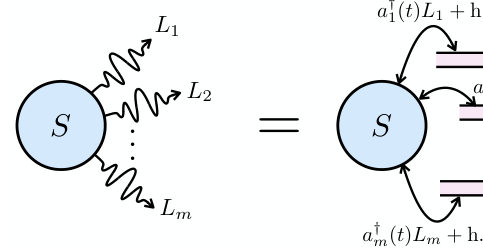
<figcaption class="paper-figure-caption"><b>Fig 1.</b> Figure 1: Dilation of the Lindblad evolution. Each jump operator Lα couples the system S to an independent bosonic field through a† α(t)Lα + h.c.. With all fields initially in the vacuum, tracing out the environment recovers the system’s Lindblad dynamics.</figcaption>
</figure>
<figure class="paper-figure-card">
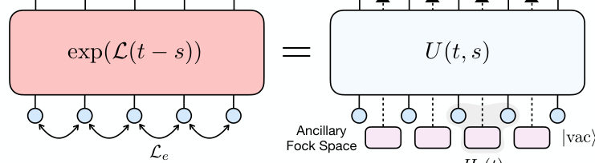
<figcaption class="paper-figure-caption"><b>Fig 2.</b> Figure 2: Dilation of nearest-neighbour Lindblad dynamics on a chain. Each edge term Le is represented by a system–environment interaction He(t) involving the two adjacent sites (blue disks) and ancillary bosonic fields (pink rectangles). The fields start in the vacuum and are traced out after the joint unitary evolution U(t,s), with t ≥s.</figcaption>
</figure>
<figure class="paper-figure-card">
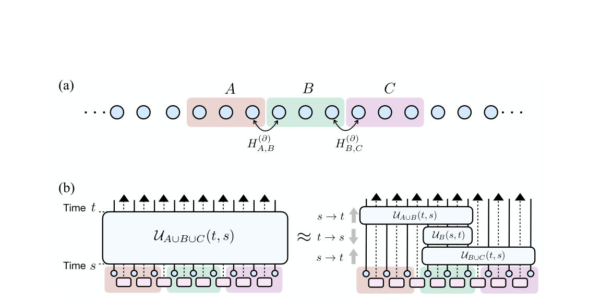
<figcaption class="paper-figure-caption"><b>Fig 3.</b> Figure 3: Local splitting of the system–environment evolution. (a) Regions A, B, and C, with boundary interactions H(∂) A,B and H(∂) B,C. (b) The full evolution is approximated by evolution on B ∪C, backward evolution on B, and evolution on A ∪B. The environment is retained throughout all three operations and traced out only at the end.</figcaption>
</figure>
<figure class="paper-figure-card">
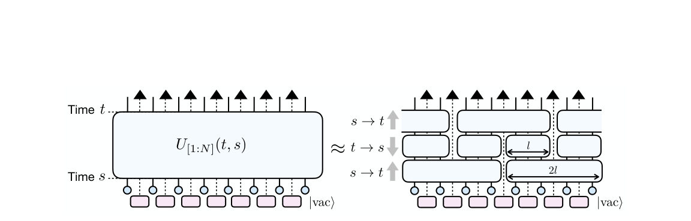
<figcaption class="paper-figure-caption"><b>Fig 4.</b> Figure 4: Three-layer decomposition of the dilated evolution. Each layer comprises unitaries that factorize over blocks of width at most 2l. In the final algorithm, l = O(log(Nt/ε)).</figcaption>
</figure>
<figure class="paper-figure-card">
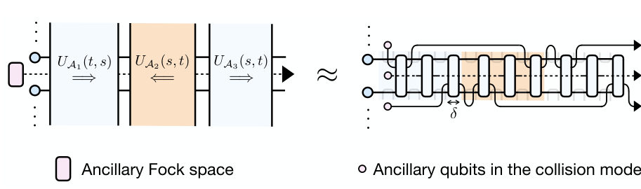
<figcaption class="paper-figure-caption"><b>Fig 5.</b> Figure 5: Collision-model approximation (right) of a sequence of forward and backward system– environment evolutions (left). The bosonic fields are replaced by ancillary qubits associated with time bins of width δ. Each ancillary qubit is used three times: first during forward evolution, again during the corresponding backward time step and a third time in the final forward time step. In the end, the ancillary qubits are traced out.</figcaption>
</figure>
</div>

<p><strong>Summary.</strong> This paper presents a near-optimal quantum algorithm to simulate dynamics governed by Lindbladian master equations on a lattice. By utilizing the exact dilation into a system-environment unitary evolution, the authors adapt techniques from Hamiltonian simulation to handle the irreversible nature of open quantum systems. This achieves scaling comparable to state-of-the-art methods, making it highly relevant for quantum simulation of dissipative processes.</p>
<p><strong>Why it may be interesting.</strong> This work directly addresses simulating open quantum systems (Lindbladians) on quantum hardware, which is a major challenge in quantum computation, by adapting successful techniques from Hamiltonian simulation.</p>
<details>
<summary>Detailed structure</summary>
<p><strong>Main problem.</strong> Developing quantum algorithms to simulate time evolution under geometrically local Lindbladians efficiently.</p>
<p><strong>Main result.</strong> The authors present a near-optimal algorithm achieving gate depth $O(t 	ext{ polylog}(Nt/\epsilon))$, matching the performance of HHKL for Hamiltonian simulation.</p>
<p><strong>Method.</strong> The approach involves using an exact dilation of the Lindblad master equation via Quantum Stochastic Calculus and then applying techniques analogous to those used for Hamiltonian simulation.</p>
<p><strong>Model / system.</strong> The system is a lattice of qudits whose dynamics are governed by a Lindbladian master equation $\mathcal{L} = \sum_e L_e$. The simulation is performed by mapping the Lindbladian evolution to a unitary evolution of an extended system-environment state.</p>
<p><strong>Key observables.</strong> Approximation error in the diamond norm ($\lVert E - \exp(Lt) 
Vert_\diamond \le \epsilon$), and the required gate complexity.</p>
<p><strong>Important parameters / regimes.</strong> Evolution time ($t$), system size ($N$), and approximation error ($\epsilon$).</p>
<p><strong>Assumptions / limitations.</strong> The analysis requires bounding the environment state to a low-excitation subspace and relies on constructing efficient block-encodings for the system-environment dynamics.</p>
<p><strong>Figures summary.</strong> Figures illustrate the dilation of the Lindblad evolution, showing how jump operators couple the system to independent bosonic fields, and how the system-environment interaction is modeled.</p>
<p><strong>Paper structure.</strong> The paper first establishes the problem using the Lindbladian and its dilation. It then develops techniques to bound the system-environment interaction within a low-excitation space, culminating in the construction of unitaries using block-encoding and polar factor approximations to achieve the final complexity bounds.</p>
</details>
<details>
<summary>Abstract</summary>
<p>We consider the problem of simulating dynamics under geometrically local Lindbladians acting on a lattice of qudits. We present an algorithm to approximate the time evolution under these Lindbladians for evolution time $t$ and on $N$ qudits to diamond norm error $\varepsilon$ using geometrically local circuits of depth $O(t \ \polylog(Nt/\varepsilon))$. Our results thus achieve a performance comparable to that of the Haah-Hastings-Kothari-Low (HHKL) algorithm for lattice Hamiltonian simulation.</p>
</details>
<p><sub><a href="#top">↑ back to top</a></sub></p>

<p><a id="paper-2609.37163"></a></p>
<h3 id="optically-induced-modulation-and-programming-of-diamond-photonic-cavities"><a href="http://arxiv.org/abs/2609.37163v1">Optically-Induced Modulation and Programming of Diamond Photonic Cavities</a></h3>
<p><strong>Authors:</strong> Yuchun Zhu, Amirali Arabmoheghi, Nicolas Le Thomas, Niels Quack, Valentin Goblot, Christophe Galland<br>
<strong>Type:</strong> experiment · <strong>Category:</strong> quantum information and computing · <strong>PDF:</strong> <a href="https://arxiv.org/pdf/2609.37163v1">https://arxiv.org/pdf/2609.37163v1</a><br>
<strong>Analysis basis:</strong> full PDF text, analyzed in chunks
<strong>Topic relevance:</strong> 🔥 <code>QC/QI experiment</code> <strong>4/5</strong> · 🔥 <code>quantum optics experiment</code> <strong>4/5</strong> · <code>analog quantum simulation</code> <strong>3/5</strong> · <code>Tavis-Cummings &amp; cavity-many-emitter</code> <strong>2/5</strong> · <code>driven-dissipative phase transition</code> <strong>2/5</strong> · <code>interference shaping light</code> <strong>1/5</strong> · <code>quantum measurements</code> <strong>1/5</strong></p>
<div class="figure-strip-hint">↔ Scroll figures horizontally</div>
<div class="paper-figures-scroll">
<figure class="paper-figure-card">
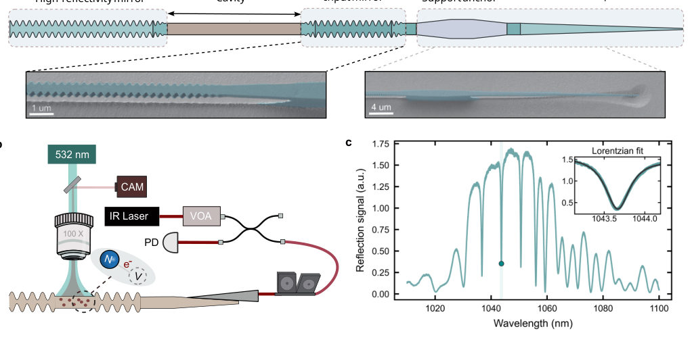
<figcaption class="paper-figure-caption"><b>Fig 1.</b> FIG. 1. Experimental scheme and representative cavity spectrum. a, Schematic of a suspended diamond Fabry–Perot</figcaption>
</figure>
<figure class="paper-figure-card">
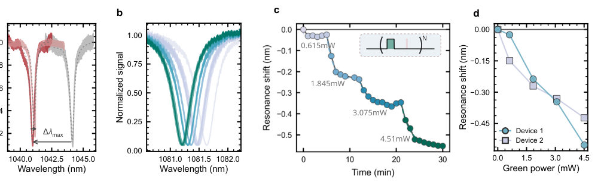
<figcaption class="paper-figure-caption"><b>Fig 2.</b> FIG. 2. Long-lived photorefractive tuning of diamond nanophotonic cavity resonances. a, Normalised reflection</figcaption>
</figure>
<figure class="paper-figure-card">
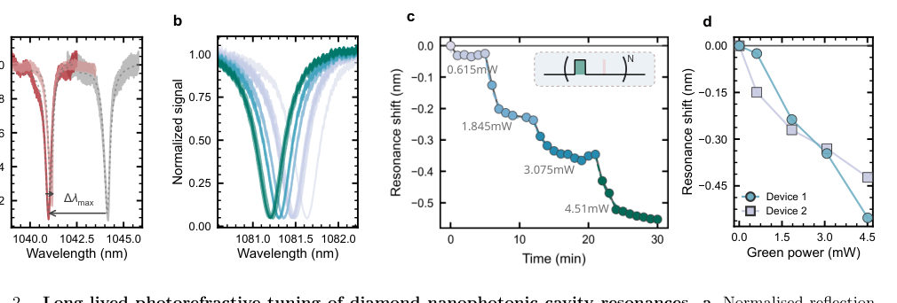
<figcaption class="paper-figure-caption"><b>Fig 3.</b> Figure 1c shows a representative normalized IR reflection spectrum of a fabricated device without green illumination.</figcaption>
</figure>
<figure class="paper-figure-card">
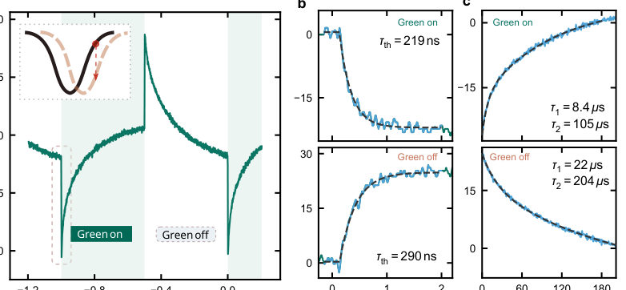
<figcaption class="paper-figure-caption"><b>Fig 4.</b> FIG. 3. Time-domain cavity response under square-wave green excitation. a, Representative time trace of the</figcaption>
</figure>
<figure class="paper-figure-card">
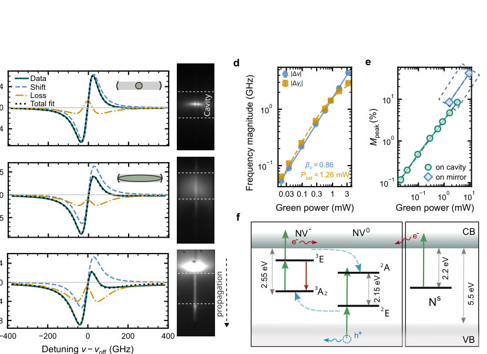
<figcaption class="paper-figure-caption"><b>Fig 5.</b> FIG. 4. Modulation of refractive index and absorption coefficient extracted from LIA spectra. a–c, Contrast-</figcaption>
</figure>
</div>

<p><strong>Summary.</strong> This paper demonstrates a novel method to dynamically control and tune diamond photonic cavities using only light. By inducing both fast thermal shifts and slow, quasi-permanent charge-mediated blue-shifts, the authors establish a highly reconfigurable platform. This work is crucial for developing integrated quantum and nonlinear photonic technologies.</p>
<p><strong>Why it may be interesting.</strong> The work directly addresses the integration of quantum emitters (NV centers) into advanced photonic circuits, providing a platform for quantum light sources and nonlinear optics, which is central to quantum information processing.</p>
<details>
<summary>Detailed structure</summary>
<p><strong>Main problem.</strong> The primary challenge addressed is developing practical, dynamic, and tunable mechanisms for controlling monolithic diamond photonic circuits.</p>
<p><strong>Main result.</strong> The authors demonstrated all-optical modulation ($\approx 45\%$ depth) and long-lived, reversible tuning ($\Delta\lambda = 3.15 	ext{ nm}$) of diamond photonic cavities using green light excitation.</p>
<p><strong>Method.</strong> The study employed optical spectroscopy, using an IR laser to probe the cavity resonance while modulating or illuminating it with a green laser (532 nm) to induce changes.</p>
<p><strong>Model / system.</strong> The platform utilizes suspended diamond Fabry-Perot nanobeam cavities containing Nitrogen-Vacancy (NV) color centers. The physics involves competing contributions to the cavity shift: a thermo-optic red-shift and a novel charge-mediated blue-shift via free-carrier plasma dispersion.</p>
<p><strong>Key observables.</strong> Infrared modulation depth, photo-refractive resonance blue-shift ($\Delta\lambda$), cavity linewidth, and time-dependent resonance shifts.</p>
<p><strong>Important parameters / regimes.</strong> Modulation depth of $\approx 45\%$; maximum tuning of $3.15 	ext{ nm}$ ($0.87 	ext{ THz}$); comparison to high-voltage Pockels modulators.</p>
<p><strong>Assumptions / limitations.</strong> The analysis assumes the free-carrier response is governed by the Drude model and that the observed shifts are due to the combination of thermal and photo-carrier effects.</p>
<p><strong>Figures summary.</strong> Figures illustrate the experimental setup, long-lived photorefractive tuning over days, time-domain responses distinguishing fast thermal and slow charge-related shifts, and spectral analysis comparing different illumination conditions.</p>
<p><strong>Paper structure.</strong> The paper progresses by first demonstrating the feasibility of all-optical modulation and tuning, then analyzing the temporal dynamics to separate thermal and charge-related shifts, and finally performing detailed modeling to confirm the free-carrier mechanism over singlet absorption.</p>
</details>
<details>
<summary>Abstract</summary>
<p>Single-crystal diamond combines exceptional optical, thermal, and mechanical properties while hosting optically addressable and spin-coherent colour centres, making it a promising platform for integrated quantum and nonlinear photonics. However, practical post-fabrication mechanisms for dynamically controlling and tuning monolithic diamond photonic circuits remain limited. Here, we demonstrate all-optical modulation and long-lived tuning of suspended diamond Fabry--Perot nanobeam cavities containing nitrogen-vacancy centres. Under 532~nm illumination, the infrared (1000 to 1100~nm) cavity response is governed by two competing contributions: a well-understood thermo-optic red-shift, and a novel charge-mediated blue-shift that we attribute to the free-carrier plasma dispersion effect. With 10~mW of 20~kHz-modulated green light, we achieve an infrared modulation depth of approximately 45\% of the available reflection contrast. Green illumination also produces quasi-permanent photo-refractive resonance blue-shifts, with a maximum observed tuning of 3.15~nm (0.87~THz), without measurable degradation of the cavity linewidth or contrast. Achieving the same cavity shift in a lithium-niobate Pockels modulator would require 200 to 500~V across a \(5~μ\mathrm{m}\) electrode gap. These results establish a monolithic diamond nanophotonic platform combining agile and reversible modulation with long-lived optical reconfiguration, two key ingredients in photonic technologies.</p>
</details>
<p><sub><a href="#top">↑ back to top</a></sub></p>

<p><a id="paper-2609.36836"></a></p>
<h3 id="ordering-controlled-by-the-measurement-feedback-interval-in-quantum-boltzmann-samplers"><a href="http://arxiv.org/abs/2609.36836v1">Ordering controlled by the measurement-feedback interval in quantum Boltzmann samplers</a></h3>
<p><strong>Authors:</strong> Peng Wang, Yu-Xuan Zhang, Hai-Tao Ding, Leong-Chuan Kwek<br>
<strong>Type:</strong> theory · <strong>Category:</strong> statistical mechanics · <strong>PDF:</strong> <a href="https://arxiv.org/pdf/2609.36836v1">https://arxiv.org/pdf/2609.36836v1</a><br>
<strong>Analysis basis:</strong> full PDF text, analyzed in chunks
<strong>Topic relevance:</strong> 🔥 <code>driven-dissipative phase transition</code> <strong>4/5</strong> · 🔥 <code>quantum measurements</code> <strong>4/5</strong> · <code>methods for driven-dissipative</code> <strong>3/5</strong> · <code>non-equilibrium universality</code> <strong>3/5</strong> · <code>Keldysh / 2PI / non-Gaussian methods</code> <strong>1/5</strong> · <code>analog quantum simulation</code> <strong>1/5</strong> · <code>correlated / nonlocal dissipation</code> <strong>1/5</strong></p>
<div class="figure-strip-hint">↔ Scroll figures horizontally</div>
<div class="paper-figures-scroll">
<figure class="paper-figure-card">
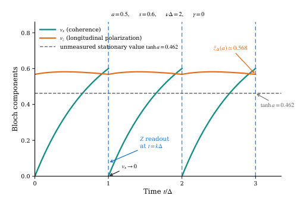
<figcaption class="paper-figure-caption"><b>Fig 1.</b> FIG. 1. Local dynamics underlying the response enhance- ment under periodic readout. Outcome-averaged Bloch com- ponents in the periodic steady state for a clamped input a = 0.5, with s = 0.6, ν∆= 2, and zero environmental de- phasing. The outcome-averaged dynamics follow Eq. (5) ini- tialized immediately after a readout at vx = 0 and vz = ¯z∆(a). Blue dashed lines mark projective Z readouts, which reset vx to zero while leaving the outcome-averaged vz unchanged. Be- tween readouts, transverse coherence rebuilds and vz evolves continuously. Orange dots mark the stationary readout polar- ization ¯z∆(a) ≃0.568, given by Eq. (9); this is not a time av- erage over the interval. The horizontal...</figcaption>
</figure>
<figure class="paper-figure-card">
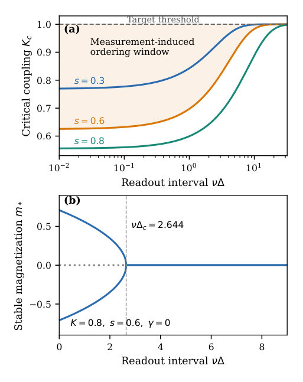
<figcaption class="paper-figure-caption"><b>Fig 2.</b> FIG. 2. Ordering controlled by the readout interval, with zero environmental dephasing. (a) Exact thermodynamic thresh- old, Eq. (27). The shaded region for s = 0.6 is ordered al- though the programmed Curie–Weiss law is disordered. (b) Stable solutions of Eq. (24) at K = 0.8, s = 0.6. The cen- tral dotted branch is unstable. Changing the interval alone crosses the transition at ν∆c = 2.6438.</figcaption>
</figure>
<figure class="paper-figure-card">
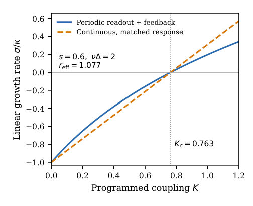
<figcaption class="paper-figure-caption"><b>Fig 3.</b> FIG. 3. Linear relaxation at matched static response. At s = 0.6 and ν∆= 2, the continuous model uses r = reff(∆) from Eq. (14). The curves show Eq. (34) in physical time, normalized by κ. They share the critical coupling but have different relaxation rates below it and different growth rates above it. The comparison concerns infinitesimal perturba- tions about m = 0, not relaxation within an ordered branch.</figcaption>
</figure>
<figure class="paper-figure-card">
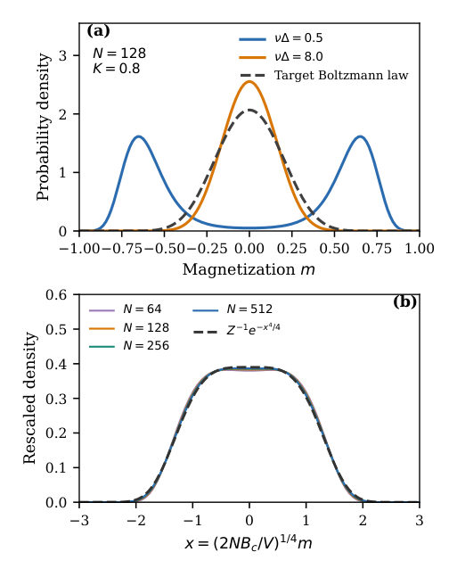
<figcaption class="paper-figure-caption"><b>Fig 4.</b> FIG. 4. Exact stationary calculations for the measured finite network. (a) At N = 128, K = 0.8, s = 0.6, the output is bimodal for ν∆= 0.5 and unimodal for ν∆= 8. The dashed curve is the programmed law, Eq. (1). (b) At K = Kc(0.5/ν) = 0.661927, rescaled distributions approach the quartic critical form. Here V = 1 −E2 and Bc is given by Eq. (31). All curves are theoretical; no trajectory sampling is used.</figcaption>
</figure>
</div>

<p><strong>Summary.</strong> This work demonstrates that the mere act of repeatedly measuring and feeding back results from a quantum system can induce collective ordering, even if the system's inherent programmed state is disordered. The ordering transition is controlled by the measurement-feedback interval, leading to dynamics that mimic continuous dephasing models. This highlights the profound role of measurement back-action in shaping macroscopic quantum behavior.</p>
<p><strong>Why it may be interesting.</strong> It provides a concrete, measurable mechanism (measurement frequency) by which non-equilibrium quantum dynamics can induce macroscopic order, offering insights into measurement-induced phase transitions relevant to open quantum systems.</p>
<details>
<summary>Detailed structure</summary>
<p><strong>Main problem.</strong> The paper investigates how the measurement-feedback interval controls the emergence of collective ordering in a quantum Boltzmann sampler, even when the underlying programmed distribution is disordered.</p>
<p><strong>Main result.</strong> Shortening the measurement-feedback interval drives a continuous transition to an ordered stationary state, and the resulting dynamics map onto those of a continuous dephasing model.</p>
<p><strong>Method.</strong> The authors derived the exact finite-interval Markov kernel and analyzed the stationary state by comparing discrete measurement dynamics with continuous master equation descriptions.</p>
<p><strong>Model / system.</strong> The system is a quantum Boltzmann sampler implemented via a partial-reset qubit model, governed by a programmed Hamiltonian and subjected to repeated projective measurements with a feedback interval $\Delta$.</p>
<p><strong>Key observables.</strong> Invariant polarization ($ar{z}_\Delta(a)$), stationary gain ($G_\Delta$), magnetization ($m$), and critical scaling exponents.</p>
<p><strong>Important parameters / regimes.</strong> Measurement-feedback interval ($\Delta$), coupling strength ($J_{ij}$), and the environmental dephasing rate ($\gamma=0$ in the main analysis).</p>
<p><strong>Assumptions / limitations.</strong> The analysis assumes ideal, instantaneous projective measurements and focuses on the zero environmental dephasing rate ($\gamma=0$).</p>
<p><strong>Figures summary.</strong> Figures illustrate response enhancement exceeding the unmeasured value, the ordering window controlled by the readout interval, and comparisons of linear relaxation rates between the discrete and continuous models.</p>
<p><strong>Paper structure.</strong> The paper progresses from deriving the finite-interval Markov kernel and showing response enhancement, to analyzing the continuous transition to order via fixed-point analysis, and finally confirming the differences between the discrete and continuous dynamics through critical scaling checks.</p>
</details>
<details>
<summary>Abstract</summary>
<p>We show that the measurement--feedback interval alone can induce ordering in a quantum Boltzmann sampler with fixed programmed couplings and a fixed local dissipative rule. At zero environmental dephasing, repeated projective measurements remove transverse coherence regenerated during relaxation, thereby enhancing the local longitudinal response. We derive the exact finite-interval Markov kernel for successive measurement records and obtain the ordering threshold in the Curie--Weiss limit. For couplings below the equilibrium Curie--Weiss threshold, shortening the readout interval drives a continuous transition to an ordered stationary state even though the programmed Boltzmann distribution remains disordered. The stationary response and equation of state map exactly onto those of a continuously interacting model with dephasing, while the linear relaxation rates remain distinct at matched static response. Exact finite-size stationary calculations reveal the transition through bimodal magnetization distributions and mean-field critical scaling.</p>
</details>
<p><sub><a href="#top">↑ back to top</a></sub></p>

<p><a id="paper-2609.37523"></a></p>
<h3 id="asymptotic-pseudospectra-in-dissipative-floquet-quantum-systems-geometric-structures-and-observable-dynamics"><a href="http://arxiv.org/abs/2609.37523v1">Asymptotic Pseudospectra in Dissipative Floquet Quantum Systems: Geometric Structures and Observable Dynamics</a></h3>
<p><strong>Authors:</strong> Yuncheng Xie, Haozhe Shi, Zhuocheng Ma, Weibin Chu, Xin-Gao Gong<br>
<strong>Type:</strong> theory · <strong>Category:</strong> other · <strong>PDF:</strong> <a href="https://arxiv.org/pdf/2609.37523v1">https://arxiv.org/pdf/2609.37523v1</a><br>
<strong>Analysis basis:</strong> full PDF text, analyzed in chunks
<strong>Topic relevance:</strong> 🔥 <code>driven-dissipative phase transition</code> <strong>4/5</strong> · <code>methods for driven-dissipative</code> <strong>3/5</strong> · <code>non-equilibrium universality</code> <strong>3/5</strong> · <code>Keldysh / 2PI / non-Gaussian methods</code> <strong>2/5</strong> · <code>correlated / nonlocal dissipation</code> <strong>2/5</strong> · <code>analog quantum simulation</code> <strong>1/5</strong></p>
<div class="figure-strip-hint">↔ Scroll figures horizontally</div>
<div class="paper-figures-scroll">
<figure class="paper-figure-card">
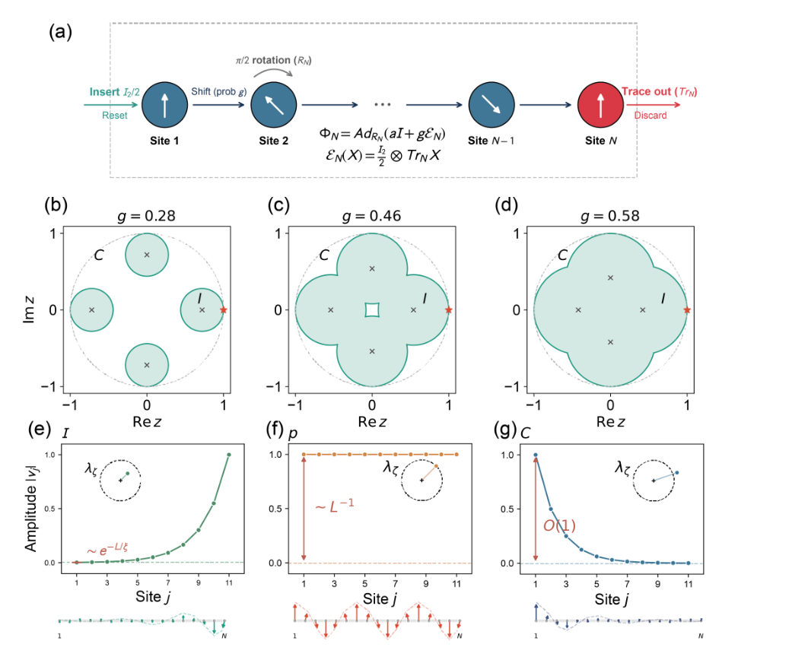
<figcaption class="paper-figure-caption"><b>Fig 1.</b> FIG. 1. Reorganization of the dissipative-shift-chain atlas with the activation probability g. (a) One period of the channel: insertion of a maximally mixed spin, a shift applied with probability g, a π/2 rotation, and the discarding of the last site. (b)–(d) Complete asymptotic pseudospectral atlas at g = 0.28, 0.46, and 0.58. The domains pass from disconnected, to a connected union enclosing a hole, to a filled center. Filled regions carry exponential validity scales, exposed solid boundaries linear scales, and the exterior a positive limiting residual. Crosses mark the exact nonstationary eigenvalues, the star the stationary multiplier, and the dashed circle is |z| = 1. (e)–(g) Spatial...</figcaption>
</figure>
<figure class="paper-figure-card">
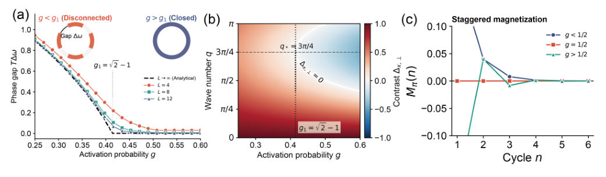
<figcaption class="paper-figure-caption"><b>Fig 2.</b> FIG. 2. Spin-wave observables diagnosing the two geometric transitions of the shift-chain atlas. All curves are theoretical predictions. (a) Width T∆ω of the excluded band of Floquet phases, Eq. (16), against the activation probability g. It vanishes at the first threshold g1 = √</figcaption>
</figure>
<figure class="paper-figure-card">
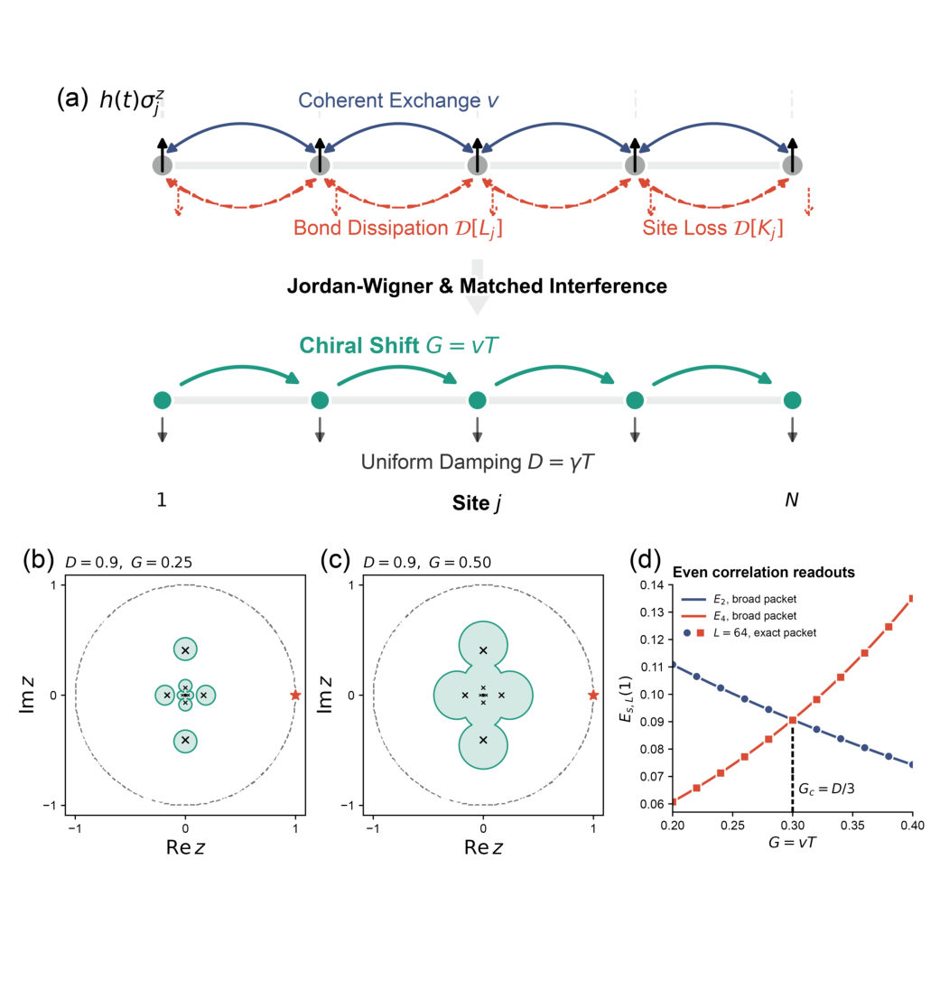
<figcaption class="paper-figure-caption"><b>Fig 3.</b> FIG. 3. Correlation control at fixed stationary state and fixed exact Floquet spectrum in the chiral XY model. (a) The effective dynamics. A spin chain with coherent exchange, bond dissipation, and site loss maps under the Jordan–Wigner transformation and matched interference onto a strict directed shift with uniform damping. (b)–(c) Complete spin-operator pseudospectral atlases at G = 0.25 and G = 0.50, both at D = 0.9. The exact eigenvalues (crosses), the stationary multiplier (star), and the unit circle are identical in the two panels; only the domains deform. Filled domains carry exponential validity scales, exposed solid interfaces linear scales, and the exterior a positive limiting...</figcaption>
</figure>
</div>

<p><strong>Summary.</strong> This paper develops a novel 'asymptotic pseudospectral atlas' to analyze open quantum systems driven by periodic forces, where standard spectral methods fail. By classifying the geometry of the pseudospectra, the authors predict that global structural changes in this atlas correspond directly to measurable physical events, such as the exchange of correlation signal orders in the chiral XY model.</p>
<p><strong>Why it may be interesting.</strong> This work provides a powerful, geometry-based theoretical tool to predict observable changes in complex, non-Hermitian, open quantum systems, linking spectral theory directly to measurable physical phenomena.</p>
<details>
<summary>Detailed structure</summary>
<p><strong>Main problem.</strong> The paper addresses the limitations of the Floquet spectrum for periodically driven open quantum systems, necessitating the use of pseudospectra to accurately characterize dynamics in the thermodynamic limit.</p>
<p><strong>Main result.</strong> The authors establish an 'asymptotic pseudospectral atlas' that provides a geometric structure classifying the validity regimes (exponential, algebraic, bounded) of approximate modes, which dictates observable physical transitions.</p>
<p><strong>Method.</strong> The core method involves analyzing the asymptotic size-scaling laws of pseudospectral residuals, formalizing this into an atlas that partitions the unit disk into distinct geometric domains.</p>
<p><strong>Model / system.</strong> The study applies to general periodically driven open quantum systems, demonstrated using specific models like a dissipative shift chain and the chiral XY model.</p>
<p><strong>Key observables.</strong> Spin-wave observables, correlation signals, and the pseudospectral residual $\epsilon_N(z)$ are used to detect geometric transitions.</p>
<p><strong>Important parameters / regimes.</strong> The key parameters include the driving strength ($g$) and the system size ($N$), which govern the transitions between different scaling regimes.</p>
<p><strong>Assumptions / limitations.</strong> The analysis relies on the 'common-limit hypothesis' for simplifying the asymptotic indices and involves complex block constructions for error bounding.</p>
<p><strong>Figures summary.</strong> Figures illustrate the evolution of the pseudospectral atlas, showing how components merge and holes close at critical parameter values ($g_1, g_2$).</p>
<p><strong>Paper structure.</strong> The paper builds from defining the pseudospectral problem to introducing the asymptotic atlas, then applies this geometric framework to analyze specific physical models (dissipative shift chain, chiral XY model) to predict observable changes.</p>
</details>
<details>
<summary>Abstract</summary>
<p>In periodically driven open quantum systems, nonnormality renders the Floquet spectrum insufficient as the system approaches the thermodynamic limit, so that pseudospectra are needed to characterize the dynamics accurately. While conventional approaches mainly focus on the local dynamics of isolated pseudospectra, their global connections and the resulting physical consequences for observables have remained largely unexplored. Here, we uncover this collective behavior by classifying the unit disk into distinct domains of exponential, algebraic, and bounded accuracy according to the asymptotic size-scaling laws of pseudospectral residuals, yielding an underlying geometric structure. We demonstrate the physical implications of this structure through two exactly solvable models. First, in a dissipative shift chain, parameter tuning drives geometric transitions that are detectable via spin-wave observables. Second, in a chiral XY model, we use this geometric structure to explain the origin of a measurable phenomenon: two correlation signals exchange their retention order under continuous parameter tuning. Our findings not only establish a new theoretical paradigm for understanding dissipative Floquet quantum systems, but also predict geometry-driven observables for quantum computing experiments.</p>
</details>
<p><sub><a href="#top">↑ back to top</a></sub></p>

<p><a id="paper-2609.38127"></a></p>
<h3 id="multimode-radiation-pressure-actuation-of-a-mechanical-resonator-using-a-spatial-mode-sorter"><a href="http://arxiv.org/abs/2609.38127v1">Multimode radiation pressure actuation of a mechanical resonator using a spatial mode sorter</a></h3>
<p><strong>Authors:</strong> Morgan E. Choi, Daniel Allepuz-Requena, Diego Torres-Barajas, Neshat Sadafi, Dalziel J. Wilson<br>
<strong>Type:</strong> experiment · <strong>Category:</strong> other · <strong>PDF:</strong> <a href="https://arxiv.org/pdf/2609.38127v1">https://arxiv.org/pdf/2609.38127v1</a><br>
<strong>Analysis basis:</strong> full PDF text, analyzed in chunks
<strong>Topic relevance:</strong> 🔥 <code>interference shaping light</code> <strong>4/5</strong> · <code>quantum optics experiment</code> <strong>3/5</strong> · <code>analog quantum simulation</code> <strong>2/5</strong> · <code>methods for driven-dissipative</code> <strong>2/5</strong> · <code>quantum measurements</code> <strong>2/5</strong> · <code>correlated / nonlocal dissipation</code> <strong>1/5</strong> · <code>driven-dissipative phase transition</code> <strong>1/5</strong></p>
<div class="figure-strip-hint">↔ Scroll figures horizontally</div>
<div class="paper-figures-scroll">
<figure class="paper-figure-card">
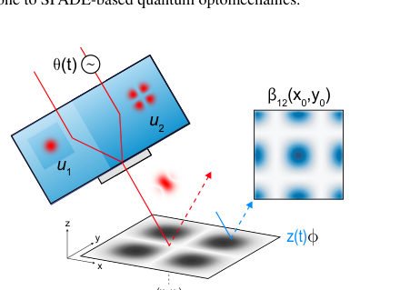
<figcaption class="paper-figure-caption"><b>Fig 1.</b> FIG. 1. Multimode radiation pressure actuation of a membrane. A dynamically structured laser beam is produced by modulating the relative phase θ between two spatial modes u1 and u2 using a multi- plane light converter (MPLC). Reflecting the laser from a membrane (modeshape φ) results in a vibration amplitude z proportional to the optomechanical scattering coefficient β12 = ⟨u2|φ|u1⟩. Rastering the beam position (x0,y0) yields a radiation pressure map β12(x0,y0).</figcaption>
</figure>
<figure class="paper-figure-card">
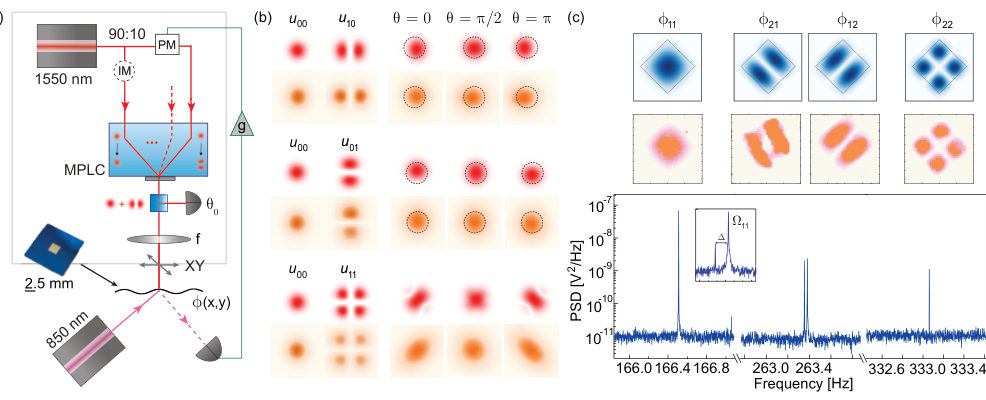
<figcaption class="paper-figure-caption"><b>Fig 2.</b> FIG. 2. Experimental setup and characterization of optical and mechanical modeshapes. (a) Experimental setup for two mode radiation pressure actuation and feedback control. PM = phase modulator. MPLC = Multi-plane light converter. f = lens for focusing onto membrane. XY = micropositioning stage for rastering location of beam on membrane. Green line = feedback of photocurrent from optical lever (purple). Inset: photograph of 2.5 mm square Si3N4 membrane. (b) Intensity profiles of single-mode umn and two-mode illumination fields u00 + αumneiθ produced by the MPLC, for |α|2 ≈0.1 and umn ∈{u00,u21,u11}. Red = model, orange = measurement. (c) Intensity profiles of membrane mechanical mode shapes...</figcaption>
</figure>
<figure class="paper-figure-card">
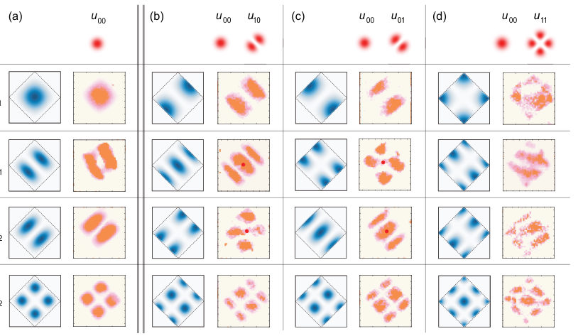
<figcaption class="paper-figure-caption"><b>Fig 3.</b> FIG. 3. Single and two-mode radiation pressure maps for HG-mode illumination of a square membrane. Four mechanical modes φi j (rows) and illumination scenarios u00 +αumneiθ (columns) are shown, corresponding to radiation pressure maps β 2 00,kl(x,y). Blue (orange) = model (measurement): (a) Single-mode u00 maps β 2 00,00(x,y) from Fig. 2c. (b-d) Two-mode maps for umn ∈{u10,u01,u11} using α2 ≈0.1 (b,c) and 0.5 (d). Red dots in (b) and (c) show the beam position used for the feedback cooling data in Fig. 4.</figcaption>
</figure>
<figure class="paper-figure-card">
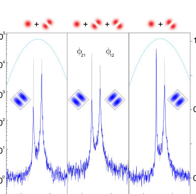
<figcaption class="paper-figure-caption"><b>Fig 4.</b> FIG. 4. Mechanical-mode-selective feedback cooling via multi- mode radiaton pressure actuation. Raw displacement power spec- tral densities (PSDs) for near-degenerature φ21 and φ21 membrane modes are shown, overlaid with the normalized magnitude of the feedback controller gain: a 1-kHz-wide notch filter (light blue, right axis). Left (right) plot: selective cooling of the φ21 (φ12) mechani- cal mode via feedback to the relative phase of the u10 (u01) and u00 optical modes. Middle plot: simultanous cooling of φ21 and φ12 via feedback to both u10 and u01. The beam position on the membrane is indicated by a red circle in Fig. 3.</figcaption>
</figure>
</div>

<p><strong>Summary.</strong> This research demonstrates how to use structured light from a spatial mode demultiplexer to exert a radiation pressure force on a mechanical membrane. By mapping the coupling coefficients, the authors show that two-mode illumination can probe spatial derivatives of the mechanical mode shapes. Crucially, they apply this to implement a feedback cooling scheme capable of simultaneously cooling multiple, nearly degenerate mechanical modes.</p>
<p><strong>Why it may be interesting.</strong> This work directly bridges quantum optics (structured light, mode coupling) with mechanical quantum systems (nanoresonators, cooling), providing a powerful, scalable tool for quantum state preparation in mechanical oscillators.</p>
<details>
<summary>Detailed structure</summary>
<p><strong>Main problem.</strong> The paper demonstrates the use of multimode radiation pressure to actuate and cool mechanical resonators, overcoming the difficulty of detecting radiation pressure effects with extended objects.</p>
<p><strong>Main result.</strong> They successfully used two-mode structured light to map spatial derivatives of mechanical mode shapes and achieved selective, simultaneous cooling of two nearly degenerate mechanical modes.</p>
<p><strong>Method.</strong> The technique involves illuminating a nanomechanical membrane with structured light generated by a spatial mode demultiplexer (SPADE) to exert a radiation pressure force proportional to mode coupling coefficients.</p>
<p><strong>Model / system.</strong> The system is a $   ext{Si}_3   ext{N}_4$ nanomechanical membrane resonator. The interaction is governed by the radiation pressure force, which depends on the coupling coefficients $eta_{mn,kl}$ derived from the overlap of optical and mechanical mode profiles.</p>
<p><strong>Key observables.</strong> Position-dependent intermodal coupling coefficients ($eta_{mn,kl}$), mechanical mode shapes ($\varphi_{ij}$), and the raw displacement power spectral densities (PSDs) showing selective cooling.</p>
<p><strong>Important parameters / regimes.</strong> The coupling coefficients $eta_{mn,kl}$ are shown to be proportional to spatial derivatives of the mechanical mode shapes, allowing access to higher-order spatial information.</p>
<p><strong>Assumptions / limitations.</strong> The analysis relies on the reflected field approximation for the optical interaction, and the cooling process is modeled using a feedback force proportional to the mechanical velocity ($\propto -\dot{z}$).</p>
<p><strong>Figures summary.</strong> Figures illustrate the setup, showing how single-mode and two-mode illumination maps reproduce squared or derivative forms of the mechanical mode shapes. A key figure shows raw PSDs demonstrating the selective and simultaneous cooling of two distinct mechanical modes.</p>
<p><strong>Paper structure.</strong> The paper first establishes the theoretical framework for multimode optomechanical scattering and radiation pressure force. It then details the experimental characterization of mode coupling using structured light. Finally, it applies this knowledge to implement a feedback cooling scheme to selectively cool multiple degenerate mechanical modes.</p>
</details>
<details>
<summary>Abstract</summary>
<p>Multimode optomechanical scattering is ubiquitous in free-space imaging protocols, but its radiation pressure counterpart is challenging to detect with extended objects. Here we demonstrate radiation pressure actuation of a nanomechanical membrane using dynamically structured light from a spatial mode demultiplexer (SPADE). Using single- and two-mode illumination, we directly image the position-dependent intermodal coupling between Hermite-Gauss (HG) modes as mediated by the membrane's motion. As an application, we use multimode radiation pressure feedback to simultaneously cool two nearly degenerate membrane modes. Our results are applicable to diverse mechanical systems and serve as a stepping stone to SPADE-based quantum optomechanics.</p>
</details>
<p><sub><a href="#top">↑ back to top</a></sub></p>

<p><a id="paper-2609.36571"></a></p>
<h3 id="factorization-dynamics-between-quantum-fisher-information-and-quantum-coherence"><a href="http://arxiv.org/abs/2609.36571v1">Factorization dynamics between quantum Fisher information and quantum coherence</a></h3>
<p><strong>Authors:</strong> Xinzhi Zhao, Xinglei Yu, Liangsheng Li, Wenting Zhou, Chengjie Zhang<br>
<strong>Type:</strong> both · <strong>Category:</strong> quantum information and computing · <strong>PDF:</strong> <a href="https://arxiv.org/pdf/2609.36571v1">https://arxiv.org/pdf/2609.36571v1</a><br>
<strong>Analysis basis:</strong> full PDF text, analyzed in chunks
<strong>Topic relevance:</strong> 🔥 <code>quantum optics experiment</code> <strong>4/5</strong> · <code>QC/QI experiment</code> <strong>3/5</strong> · <code>interference shaping light</code> <strong>3/5</strong> · <code>analog quantum simulation</code> <strong>2/5</strong> · <code>quantum measurements</code> <strong>2/5</strong></p>
<div class="figure-strip-hint">↔ Scroll figures horizontally</div>
<div class="paper-figures-scroll">
<figure class="paper-figure-card">
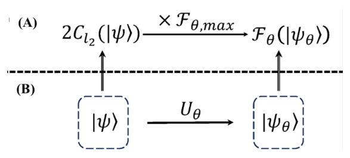
<figcaption class="paper-figure-caption"><b>Fig 1.</b> Fig. 1. Relation of the QFI and quantum coherence. Diagram of the factorization law for the QFI with coherence in the pure state model, Uθ = e−i ˆ Hθ. (A) Factorization law for the QFI. (B) Corresponding evolution process.</figcaption>
</figure>
<figure class="paper-figure-card">

<figcaption class="paper-figure-caption"><b>Fig 2.</b> Fig. 2. Illustration of the experimental setup. An experimental device for testing the factorization law for the QFI and coherence, including qubit cases (2D) and qutrit cases [three-dimensional (3D)]. Pairs of single photons are generated via spontaneous parameter down-conversion (SPDC) using a type II periodically poled potassium titanyl phosphate (PPKTP) crystal. For a wave plate group consisting of an HWP and a quarter-wave plate (QWP), the signal photons with arbitrary linear polarization states are prepared by using a polarized beam splitter (PBS), beam displacer (BD), and HWPs. On a 50:50 unpolarized beam splitter (BS), the photons of the BS reflection path are measured in the...</figcaption>
</figure>
<figure class="paper-figure-card">

<figcaption class="paper-figure-caption"><b>Fig 3.</b> Fig. 3. Results for the QFI and quantum coherence. Factorization law for the QFI and coherence in the pure state, including (A) qubit cases and (B to D) qutrit cases. Using a fixed combination of unitary operators, we input different initial states. We denote αk as the angle of the HWP Hk, α19 as the angle of the initial states for qubit cases, and α0 (α) as the angle of the initial states for qutrit cases (α is prepared jointly by α0 and α1). (A) Equation 4 is used to verify the factorization law of the QFI and coherence in qubit cases. The blue and red dots display the experimental values for the right-hand side (RHS = 2Cl2Fθ1,max) and the left-hand side (LHS = Fθ1) in Eq. 4, and the...</figcaption>
</figure>
<figure class="paper-figure-card">

<figcaption class="paper-figure-caption"><b>Fig 4.</b> Fig. 4. Var(ˆθ) and 1/Fθ(|ψθ⟩) for varying the initial states of qubit cases. Equation 6 is used to verify the relation of Var(ˆθ1) × n and 1/Fθ1(|ψθ1⟩) in qubit cases. The experimental variances (blue dots) roughly correspond to the theoretical estimation accuracies (blue solid lines) (see the Supplementary Materials for details). The theoretical curve of 1/Fθ1(|ψθ1⟩) is represented by an orange dashed line.</figcaption>
</figure>
</div>

<p><strong>Summary.</strong> This paper explores the deep connection between Quantum Fisher Information (QFI) and quantum coherence, demonstrating a factorization law that relates the QFI to the initial state's coherence. By confirming this relationship both theoretically and experimentally using photonic qubits and qutrits, the authors provide a powerful tool for quantum metrology, allowing for parameter estimation bounds based only on initial state properties.</p>
<p><strong>Why it may be interesting.</strong> This work provides a concrete, experimentally verified link between two fundamental quantum resources (coherence and QFI) that govern the ultimate precision limits in quantum sensing, which is highly relevant to quantum optics and quantum information theory.</p>
<details>
<summary>Detailed structure</summary>
<p><strong>Main problem.</strong> The paper investigates the previously unexplored interplay and factorization relationship between the Quantum Fisher Information (QFI) and quantum coherence in the context of quantum parameter estimation.</p>
<p><strong>Main result.</strong> The factorization law, linking QFI to the initial state's quantum coherence, is confirmed both theoretically and experimentally for both qubit and qutrit systems. This establishes a lower bound on the parameter estimation variance based solely on initial coherence.</p>
<p><strong>Method.</strong> The authors employ theoretical derivations for the QFI and coherence measures, which are then verified using experimental measurements on photonic systems.</p>
<p><strong>Model / system.</strong> The study uses pure states prepared in qubit and qutrit systems, evolving under a unitary transformation $U_{	heta}=e^{-i \hat{H}	heta}$. Experimentally, the platform involves an interferometric network utilizing heralded single-photon sources.</p>
<p><strong>Key observables.</strong> Quantum Fisher Information ($F_{	heta}$), Quantum Coherence ($\mathcal{C}_{l2}(
ho)$), and the variance of the estimated parameter ($  ext{Var}(\hat{  heta})$).</p>
<p><strong>Important parameters / regimes.</strong> The dimensionality of the system ($D=2$ for qubits, $D=3$ for qutrits) and the evolution angle $    heta$.</p>
<p><strong>Assumptions / limitations.</strong> The analysis assumes the Hamiltonian $\hat{H}$ is independent of the parameter $   heta$ for the simplest QFI form, and the experimental measurements rely on specific unitary operations.</p>
<p><strong>Figures summary.</strong> Figures illustrate the factorization law for QFI vs. coherence in both qubit and qutrit cases, and another figure validates the derived lower bound on the parameter estimation variance.</p>
<p><strong>Paper structure.</strong> The paper progresses by first establishing the theoretical factorization law for QFI and coherence, then presenting the experimental setup and results to verify this law in both 2D and 3D systems, and finally confirming the resulting lower bound on estimation variance.</p>
</details>
<details>
<summary>Abstract</summary>
<p>Quantum Fisher information (QFI) quantifies the sensitivity of a quantum state to a parameter change and plays a key role in quantum metrology. Meanwhile, quantum coherence is a crucial resource for quantum information processing. However, despite extensive studies on various aspects of quantum metrology, the interplay between the dynamics of the QFI and quantum coherence remains unexplored. Here, we explore the factorization relationship between the QFI and quantum coherence, both theoretically and experimentally. We prepare pure states in qubit and qutrit systems and apply unitary evolution to investigate this relationship. Our results confirm the factorization law, offering strong evidence for this relationship. Furthermore, we establish a lower bound on the variance of the estimated parameter that does not require the final state information. This approach reveals a deep connection between the QFI and quantum coherence, providing insights into quantum parameter estimation. These findings have potential applications in quantum sensing and quantum metrology.</p>
</details>
<p><sub><a href="#top">↑ back to top</a></sub></p>

<p><a id="paper-2609.37766"></a></p>
<h3 id="spin-exchange-interactions-between-circular-rydberg-atoms-over-long-times"><a href="http://arxiv.org/abs/2609.37766v1">Spin-exchange interactions between circular Rydberg atoms over long times</a></h3>
<p><strong>Authors:</strong> Andrés Durán-Hernández, Gautier Creutzer, Aurore Alice Young, Abderrahmane Kassid, Yohann Machu, Jean-Michel Raimond, Michel Brune, Clément Sayrin<br>
<strong>Type:</strong> experiment · <strong>Category:</strong> other · <strong>PDF:</strong> <a href="https://arxiv.org/pdf/2609.37766v1">https://arxiv.org/pdf/2609.37766v1</a><br>
<strong>Analysis basis:</strong> full PDF text, analyzed in chunks
<strong>Topic relevance:</strong> 🔥 <code>analog quantum simulation</code> <strong>4/5</strong> · <code>QC/QI experiment</code> <strong>3/5</strong> · <code>Rydberg arrays</code> <strong>3/5</strong> · <code>quantum measurements</code> <strong>2/5</strong> · <code>correlated / nonlocal dissipation</code> <strong>1/5</strong> · <code>quantum optics experiment</code> <strong>1/5</strong></p>
<div class="figure-strip-hint">↔ Scroll figures horizontally</div>
<div class="paper-figures-scroll">
<figure class="paper-figure-card">

<figcaption class="paper-figure-caption"><b>Fig 1.</b> Figure 1. Manipulation and measurement of interact- ing circular Rydberg qubits. a. We trap two circular Rydberg atoms (C1 and C2, cyan tori) inside optical bottle beams (blue rings) and two auxiliary atoms (A1 and A2) in their ground state (red dots) inside Gaussian optical tweezers (green disks). The distance between the two circular Ryd- berg atoms is set to d = 19 µm and that between Ak and Ck(k ∈{1, 2}) to a = 5.2 µm. We apply a 14 G magnetic field B (red arrow) parallel to the (AkCk) axes, which make an angle θM ≈54.7◦with the (C1C2) axis. The electric field F (blue arrow) makes an angle θ with the latter. During the state preparation and measurement, θ = θM to cancel the interaction...</figcaption>
</figure>
<figure class="paper-figure-card">

<figcaption class="paper-figure-caption"><b>Fig 2.</b> Figure 2. Manipulation and measurement of interacting circular Rydberg qubits. a. Quantum circuit of the circular-qubit state control. A mw π-pulse on the |1m⟩→|0m,s⟩transition applied on a circular Rydberg qubit Ck in the vicinity of an auxiliary atom Ak in |ia⟩, i ∈{0, 1} is equivalent to an auxiliary-atom-controlled CNOT gate (a-CNOT, yellow box). Ck initially in |1m⟩ends up in |(1 −i)m⟩. b. Quantum circuit of the auxiliary-atom-based measurement. The optical excitation of Ak from |1a⟩to |0a⟩in the vicinity of Ck in |im⟩, i ∈{0, 1}, is equivalent to a circular-qubit-controlled CNOT gate (c-CNOT, red-blue box), which leaves Ak in |(1 −i)a⟩. A subsequent fluorescence measurement of...</figcaption>
</figure>
<figure class="paper-figure-card">

<figcaption class="paper-figure-caption"><b>Fig 3.</b> Figure 3. Long-time spin-exchange interaction and spin-motion coupling. a. Long-duration spin-exchange oscillations. Population imbalance M(δt) (blue points) measured after the sequence of Fig. 2.c. The insets are zooms on the colour-shaded time intervals. The solid blue line is an exponentially-damped sinusoidal fit to the data, with a characteristic decay time T1 = 59(3) µs. The dashed red lines in the insets display the semi-classical numerical simulations of the interaction. b. The contrasts of the measured oscillations (blue squares), of the numerical simulations (red dashed line) and of the exponentially-damped sinusoidal fit to the data of panel a are plotted as a function of δt. The...</figcaption>
</figure>
<figure class="paper-figure-card">

<figcaption class="paper-figure-caption"><b>Fig 4.</b> Figure 4. Dynamical decoupling. a. Phase space tra- jectories of an initial coherent state |ψµ⟩for the relative mo- tion during the dynamical decoupling sequence described in the text. Two phase flips are applied at times δt = Tp and δt = 2Tp. The trajectories are plotted in red and green for an initial spin state |+⟩or |−⟩, respectively. The red- and green- shaded disks indicate their respective rotation centres. The three panels (left to right) correspond to the time intervals be- fore the first phase flip (δt &lt; Tp, left), between the two phase flips (Tp &lt; δt &lt; 2Tp, middle) and after the second phase flip (2Tp &lt; δt &lt; 3Tp, right) in the case Tp = Tt/6. In all three panels, the dashed and...</figcaption>
</figure>
</div>

<p><strong>Summary.</strong> This paper reports on observing spin-exchange interactions between circular Rydberg atoms for unprecedentedly long durations (over 60 $\mu$s). The researchers improved the coherence time by an order of magnitude and demonstrated a novel dynamical decoupling sequence. This work paves the way for long-duration quantum simulation of complex, strongly-interacting quantum systems.</p>
<p><strong>Why it may be interesting.</strong> This work directly addresses the coherence time limitation in quantum simulation platforms, providing a concrete, experimentally validated method (dynamical decoupling) to extend interaction times for strongly-interacting many-body systems using Rydberg atoms.</p>
<details>
<summary>Detailed structure</summary>
<p><strong>Main problem.</strong> The primary challenge addressed is extending the interaction time for quantum simulations using neutral atoms, as current Rydberg-based systems are limited to microsecond timescales.</p>
<p><strong>Main result.</strong> The authors observed spin-exchange interactions over timescales exceeding 60 $\mu$s, improving the state-of-the-art by an order of magnitude, and demonstrated a novel dynamical decoupling technique to counteract spin-motion coupling.</p>
<p><strong>Method.</strong> The study uses laser-trapped circular Rydberg atoms to encode spin-1/2 qubits and measures the spin-exchange dynamics by monitoring the population imbalance over extended periods.</p>
<p><strong>Model / system.</strong> The platform utilizes laser-trapped circular Rydberg atoms, forming a hybrid system with auxiliary atoms. The interaction is governed by spin-exchange coupling, and the dynamics are analyzed by measuring the time evolution of the spin coherence.</p>
<p><strong>Key observables.</strong> Spin-exchange oscillation contrast, population imbalance $M(\delta t)$, and the decay rate of the spin oscillations.</p>
<p><strong>Important parameters / regimes.</strong> Interaction times exceeding 60 $\mu$s, 40 spin-oscillation periods, and the characteristic decay time $T_1 \approx 59 \mu s$.</p>
<p><strong>Assumptions / limitations.</strong> The analysis relies on post-selection via syndrome measurement to extend the effective qubit lifetime and models the decay due to spin-motion coupling.</p>
<p><strong>Figures summary.</strong> Figures detail the physical setup, the quantum circuit sequence for state control and measurement, and the measured population imbalance $M(\delta t)$ showing exponential decay of oscillations over time.</p>
<p><strong>Paper structure.</strong> The paper details the experimental setup, describes the quantum circuit sequence for state preparation and interaction, presents the measurement of the spin-exchange dynamics, and concludes with the demonstration of dynamical decoupling to preserve coherence.</p>
</details>
<details>
<summary>Abstract</summary>
<p>Arrays of neutral atoms excited to Rydberg levels have emerged as one of the most promising platforms for quantum computation and simulation. With the hope to outperform classical devices, the number of atoms has been increased by orders of magnitude. However, the interaction time, i.e., the maximum accumulated time during which an atom interacts with its neighbours, has been limited to a few microseconds only. This restrains the number of gates per atom or prevents the simulation of long-time dynamics of quantum many-body systems. Here, we observe the spin-exchange interaction between two spin 1/2s encoded in laser-trapped circular Rydberg atoms over more than $60μs$ and 40 spin-oscillation periods, improving the state of the art by an order of magnitude. These unprecedented timescales allow us to record for weak atomic trapping a collapse and revival of the spin-exchange oscillation contrast induced by spin-motion coupling. Our results constitute the first observation of this coupling with laser-trapped Rydberg atoms. To counteract its detrimental effect for quantum simulation, we demonstrate a novel dynamical decoupling method that prevents the collapse of the spin oscillations. This method exploits the advantages of our recently developed hybrid platform that enables the measurement and the optical manipulation of long-lived circular Rydberg atoms with auxiliary Rydberg atoms. This work opens a direct route to long-duration quantum simulation of strongly-interacting many-body systems.</p>
</details>
<p><sub><a href="#top">↑ back to top</a></sub></p>

<p><a id="paper-2609.37244"></a></p>
<h3 id="l-band-single-photon-generation-from-a-cavity-coupled-silicon-c-center"><a href="http://arxiv.org/abs/2609.37244v1">L-band single-photon generation from a cavity-coupled silicon C-center</a></h3>
<p><strong>Authors:</strong> Carolina Crosta, Kyu-Young Kim, Purbita Purkayastha, Abhijit Biswas, Jasvith Raj Basani, Amirehsan Alizadehherfati, Amirehsan Boreiri, Chang-Min Lee, Fabio Pezzoli, Edo Waks<br>
<strong>Type:</strong> experiment · <strong>Category:</strong> quantum information and computing · <strong>PDF:</strong> <a href="https://arxiv.org/pdf/2609.37244v1">https://arxiv.org/pdf/2609.37244v1</a><br>
<strong>Analysis basis:</strong> full PDF text, analyzed in chunks
<strong>Topic relevance:</strong> 🔥 <code>quantum optics experiment</code> <strong>4/5</strong> · <code>QC/QI experiment</code> <strong>3/5</strong> · <code>Tavis-Cummings &amp; cavity-many-emitter</code> <strong>2/5</strong> · <code>analog quantum simulation</code> <strong>2/5</strong> · <code>interference shaping light</code> <strong>1/5</strong> · <code>quantum measurements</code> <strong>1/5</strong></p>
<div class="figure-strip-hint">↔ Scroll figures horizontally</div>
<div class="paper-figures-scroll">
<figure class="paper-figure-card">

<figcaption class="paper-figure-caption"><b>Fig 1.</b> Figure 1: a) Atomic structure of the C-center. Black, orange and red spheres represent silicon, oxygen and car- bon atoms respectively; b) Electronic structure of the C- center with transition wavelengths at cryogenic tempera- tures; c) SEM image of the nanophotonic crystal cavity; d) Schematic of the experimental configuration. The emit- ter is excited from top, while the emitted light is collected in-plane through a lensed single-mode fiber.</figcaption>
</figure>
<figure class="paper-figure-card">

<figcaption class="paper-figure-caption"><b>Fig 2.</b> Figure 2: a) Reflectivity spectrum of the cavity tuned at the C0-line wavelength (dots) and corresponding Lorentzian fit (dashed line), extracting FWHM = 0.11 ± 0.02 nm that corresponds to a quality factor of (1.4 ± 0.3) × 104; b) Pho- toluminescence spectrum (dots) of the emitter at 8 K un- der 800 nm CW excitation, pump power of 10 µW, in on- resonance condition. The Lorentzian fit of the experimental data (dashed line) provides λZPL = 1569.831±0.004 nm and FWHM = 0.078±0.001 nm; c) Photoluminescence intensity as a function of the cavity mode detuning δ. The dashed line is a visual guide to follow the change of δ.</figcaption>
</figure>
<figure class="paper-figure-card">

<figcaption class="paper-figure-caption"><b>Fig 3.</b> Figure 4: a) On-resonance C-center count rate as a func- tion of 800 nm CW pump power (dots) and two-level system fit (solid line) with Equation 2, extracting Psat = 10.4±0.3 µW and Isat = (7.68 ± 0.09) × 103 cps; b) Second-order autocorrelation measurement of a C-center under 7 µW = 0.67Psat at 800 nm CW excitation (dots) and correspond- ing fit (solid line) with Equation 3, extracting g(2)(0) = 0.23 ± 0.01.</figcaption>
</figure>
<figure class="paper-figure-card">

<figcaption class="paper-figure-caption"><b>Fig 4.</b> Figure 3: Time-resolved photoluminescence measurements of a C-center ensemble in a bare nanobeam (orange curve), providing τ0 = 1.45±0.08 µs and a single C-center in a cavity tuned (i) on-resonance (δ = 0 nm, τon = 0.287 ± 0.002 µs); (ii) slightly off-resonance (δ = −0.09 nm, showing a fast increase of the lifetime to τ = 0.523 ± 0.005 µs); and (iii) off-resonance (δ = −0.83 nm, τoff = 0.780 ± 0.030 µs). The C-center is measured at 8 K and excited by a 780 nm pulsed laser with a repetition rate of 100 kHz.</figcaption>
</figure>
</div>

<p><strong>Summary.</strong> This paper reports the successful realization of a single, high-performance quantum light source using a silicon C-center defect coupled to a photonic crystal cavity. By demonstrating strong Purcell enhancement and confirming single-photon emission in the telecom L-band, the research establishes a critical building block for future low-loss quantum communication technologies.</p>
<p><strong>Why it may be interesting.</strong> This work directly addresses the engineering challenge of integrating quantum emitters into silicon photonics, which is a cornerstone technology for scalable quantum networks and quantum communication.</p>
<details>
<summary>Detailed structure</summary>
<p><strong>Main problem.</strong> The primary goal is to create a scalable, low-loss, and long-distance quantum light source using single-photon emitters integrated into silicon photonics.</p>
<p><strong>Main result.</strong> The authors successfully isolated a single silicon C-center and demonstrated single-photon emission ($g^{(2)}(0) = 0.23$) with a significant Purcell enhancement ($F_P \geq 33$) in the telecom L-band.</p>
<p><strong>Method.</strong> The study combines advanced optical characterization techniques, including time-resolved photoluminescence (PL) measurements and second-order autocorrelation measurements, on a solid-state platform.</p>
<p><strong>Model / system.</strong> The system utilizes a single C-center defect in Silicon-on-Insulator (SOI) coupled to a high-quality factor nanophotonic crystal cavity. The physics is analyzed using concepts from cavity quantum electrodynamics (Purcell effect) and single-photon statistics.</p>
<p><strong>Key observables.</strong> Zero-phonon line (ZPL) emission at $\sim 1570$ nm, excited-state lifetime ($   au$), Purcell factor ($F_P$), and the second-order correlation function $g^{(2)}(0)$.</p>
<p><strong>Important parameters / regimes.</strong> Telecom L-band (1565 - 1625 nm), Purcell factor lower bound of 33, and $g^{(2)}(0) = 0.23$.</p>
<p><strong>Assumptions / limitations.</strong> The analysis assumes the observed enhancement is due to cavity coupling, and the single-photon nature is confirmed by $g^{(2)}(0) < 0.5$.</p>
<p><strong>Figures summary.</strong> Figures illustrate the PL spectrum vs. detuning, time-resolved PL showing lifetime changes, and the $g^{(2)}(	au)$ measurement confirming single-photon statistics.</p>
<p><strong>Paper structure.</strong> The paper progresses from establishing the physical system (C-center in SOI) to demonstrating cavity coupling via PL enhancement, quantifying the enhancement via lifetime measurements (Purcell factor), and finally confirming single-photon emission using $g^{(2)}$ measurements.</p>
</details>
<details>
<summary>Abstract</summary>
<p>Monolithic integration of single-photon sources into silicon photonics offers a compelling solution for realizing scalable quantum telecommunication architectures. Among the candidate silicon color centers, the C-center features a zero-phonon emission in the telecom L-band, corresponding to the spectral window of minimum transmission loss in optical fibers. Despite this advantage, isolating single C-centers has remained an unrealized challenge in solid-state quantum optics. In this work, we report the isolation of a single silicon C-center. We enhance the spontaneous emission rate of the zero-phonon line by coupling the single emitter to a nanophotonic crystal cavity, observing a fivefold reduction in the excited-state lifetime compared to bulk conditions, which corresponds to a Purcell factor lower bound of 33. Second-order autocorrelation measurements confirm single-photon emission from the investigated defect, obtaining an optical purity of $g^{(2)}(0) = 0.23$ without background correction. Our results establish a native telecom L-band quantum light source in silicon, laying the foundation for ultra-low-loss and long-distance quantum applications.</p>
</details>
<p><sub><a href="#top">↑ back to top</a></sub></p>

<p><a id="paper-2609.37512"></a></p>
<h3 id="exact-anomalous-current-fluctuations-in-the-strong-anisotropy-limit-of-the-xxz-chain"><a href="http://arxiv.org/abs/2609.37512v1">Exact anomalous current fluctuations in the strong-anisotropy limit of the XXZ chain</a></h3>
<p><strong>Authors:</strong> Taiki Ishiyama, Taiga Kurose, Kazuya Fujimoto, Tomohiro Sasamoto<br>
<strong>Type:</strong> theory · <strong>Category:</strong> statistical mechanics · <strong>PDF:</strong> <a href="https://arxiv.org/pdf/2609.37512v1">https://arxiv.org/pdf/2609.37512v1</a><br>
<strong>Analysis basis:</strong> full PDF text, analyzed in chunks
<strong>Topic relevance:</strong> 🔥 <code>non-equilibrium universality</code> <strong>4/5</strong> · <code>Full counting statistics</code> <strong>3/5</strong> · <code>Keldysh / 2PI / non-Gaussian methods</code> <strong>2/5</strong> · <code>analog quantum simulation</code> <strong>2/5</strong> · <code>methods for driven-dissipative</code> <strong>1/5</strong></p>
<div class="figure-strip-hint">↔ Scroll figures horizontally</div>
<div class="paper-figures-scroll">
<figure class="paper-figure-card">

<figcaption class="paper-figure-caption"><b>Fig 1.</b> Figure 1: Real part of the characteristic function of the rescaled current, ⟨eiθQt/t1/4⟩. Numerical results at t = 4, 8, and 16 are compared with the long-time prediction in Eq. (3.12) and the characteristic function of a zero-mean Gaussian with the same variance limt→∞⟨Q2 t⟩c /t1/2 = 1/(π √</figcaption>
</figure>
<figure class="paper-figure-card">

<figcaption class="paper-figure-caption"><b>Fig 2.</b> Figure 2: Schematic illustration of the mapping from the folded XXZ spin configuration to the bond configuration and then to the t–0 configuration. For even N1, the endpoint R ∈2N coincides with a boundary between two t–0 objects, whereas for odd N1, it lies inside a t–0 object. We denote by L, N, and N1 the numbers of t–0 objects, •-objects, and •1-objects, respectively, that are fully contained in (b1, . . . , bR). These complete objects are shaded in blue. A t–0 object straddling the endpoint R is not counted. For panels (a) and (b), the corresponding sectors are (L, N, N1) = (5, 3, 2) and (L, N, N1) = (4, 2, 1), respectively.</figcaption>
</figure>
<figure class="paper-figure-card">

<figcaption class="paper-figure-caption"><b>Fig 3.</b> Figure 3: Relation between the t–0 spin configuration and the magnetization domains in the folded XXZ chain. The upper row shows a t–0 configuration and its corresponding folded spin configuration, with the leftmost spin fixed to ↑. Removing the ◦-objects eliminates the highlighted oppositely oriented spin pairs, leaving the total magnetization unchanged. The lower row shows the remaining occupied objects and the corresponding folded configuration, which consists of magnetization domains without isolated spins. The dashed lines mark the positions of the domain walls, each represented by a t–0 spin label 2. Cancelling an oppositely oriented spin pair across each wall leaves successive groups...</figcaption>
</figure>
<figure class="paper-figure-card">

<figcaption class="paper-figure-caption"><b>Fig 4.</b> Figure 4: Relative deviations of the real part of the characteristic function ⟨eiθQt/t1/4⟩from the reference calculation with (L, u, χ) = (128, 0.1, 128). The deviations are defined as the difference between each numerical result and the reference, divided by the reference and expressed as a percentage. Colors indicate the physical times t = 4, 8, 16, while markers distinguish the three parameter sets specified in the legend. The absolute relative deviations remain below approximately 0.7% throughout the plotted range.</figcaption>
</figure>
</div>

<p><strong>Summary.</strong> This paper derives the exact long-time behavior of anomalous spin-current fluctuations in the folded XXZ chain. By mapping the system to the t-0 model and exploiting spin-charge separation, the authors find that the current distribution converges to a non-Gaussian M-Wright function. This provides a rigorous theoretical result for anomalous transport in strongly correlated quantum magnets.</p>
<p><strong>Why it may be interesting.</strong> The exact derivation of non-Gaussian, anomalous transport statistics in an integrable quantum chain provides deep insights into non-equilibrium dynamics, which is crucial for understanding energy/particle transport in quantum materials.</p>
<details>
<summary>Detailed structure</summary>
<p><strong>Main problem.</strong> The paper investigates the universal aspects of transport in interacting many-body systems, specifically determining the probability distribution of the time-integrated spin current.</p>
<p><strong>Main result.</strong> The long-time asymptotic distribution of the rescaled time-integrated spin current converges to a non-Gaussian distribution described by the M-Wright function.</p>
<p><strong>Method.</strong> The analysis involves mapping the folded XXZ chain to the one-dimensional t-0 model, exploiting exact spin-charge separation to reduce the problem to a free-fermion dynamical calculation.</p>
<p><strong>Model / system.</strong> The study focuses on the folded XXZ chain, which models the strong-anisotropy limit of the XXZ spin chain. The dynamics are analyzed at infinite temperature, utilizing the mapping to the t-0 model.</p>
<p><strong>Key observables.</strong> The primary observable is the time-integrated spin current, $Q_t$, analyzed via its Moment-Generating Function (MGF), $\langle e^{\lambda Q_t} 
angle$.</p>
<p><strong>Important parameters / regimes.</strong> The analysis focuses on the long-time limit ($t 	o \infty$) and the scaling of the current, $Q_t/t^{1/4}$.</p>
<p><strong>Assumptions / limitations.</strong> The derivation relies on a nonlocal map to the t-0 model and the assumption that the long-time behavior is governed by the free-fermion dynamics after separation.</p>
<p><strong>Figures summary.</strong> Figure 1 compares the characteristic function of the current at finite times (t=4, 8, 16) against the derived asymptotic prediction and a Gaussian reference.</p>
<p><strong>Paper structure.</strong> The paper establishes the problem by defining the MGF for the spin current, derives an exact finite-time expression by mapping to the t-0 model, and concludes with a long-time asymptotic analysis yielding the M-Wright function distribution.</p>
</details>
<details>
<summary>Abstract</summary>
<p>We study spin-current fluctuations of the folded XXZ chain, which describes the strong-anisotropy limit of the XXZ chain. We obtain an exact expression for the moment-generating function of the time-integrated spin current at infinite temperature. A long-time asymptotic analysis establishes that the rescaled time-integrated current converges to a non-Gaussian distribution described by the M-Wright function. The derivation relies on a nonlocal map to the one-dimensional t-0 model and its exact spin-charge separation. By extending this approach, we also show that the dynamical correlation function of the spins summed over two adjacent sites exhibits a diffusive Gaussian profile at long times.</p>
</details>
<p><sub><a href="#top">↑ back to top</a></sub></p>

<p><a id="paper-2609.37838"></a></p>
<h3 id="attosecond-correlation-interferometry"><a href="http://arxiv.org/abs/2609.37838v1">Attosecond correlation interferometry</a></h3>
<p><strong>Authors:</strong> Assaf Shonfeld, Keren Deutsch, Noa Yaffe, Michael Birk, Matan Even Tzur, Barak Dayan, Oren Cohen, Nirit Dudovich, Chen Mor<br>
<strong>Type:</strong> experiment · <strong>Category:</strong> other · <strong>PDF:</strong> <a href="https://arxiv.org/pdf/2609.37838v1">https://arxiv.org/pdf/2609.37838v1</a><br>
<strong>Analysis basis:</strong> full PDF text, analyzed in chunks
<strong>Topic relevance:</strong> 🔥 <code>quantum optics experiment</code> <strong>4/5</strong> · <code>interference shaping light</code> <strong>3/5</strong> · <code>quantum measurements</code> <strong>2/5</strong></p>
<div class="figure-strip-hint">↔ Scroll figures horizontally</div>
<div class="paper-figures-scroll">
<figure class="paper-figure-card">

<figcaption class="paper-figure-caption"><b>Fig 1.</b> FIG. 1. Generation of Correlated Attosecond Pulses (a) Schematic of the experimental setup.</figcaption>
</figure>
<figure class="paper-figure-card">

<figcaption class="paper-figure-caption"><b>Fig 2.</b> FIG. 2. Broadband transfer of TMBSV amplitude correlations into XUV harmonics (a)</figcaption>
</figure>
<figure class="paper-figure-card">

<figcaption class="paper-figure-caption"><b>Fig 3.</b> FIG. 3. Attosecond correlation interferometry (a) Mean-value oscillations of the perturbed har-</figcaption>
</figure>
<figure class="paper-figure-card">

<figcaption class="paper-figure-caption"><b>Fig 4.</b> FIG. 4. Time-domain reconstruction of correlated attosecond pulses. Reconstructed temporal</figcaption>
</figure>
</div>

<p><strong>Summary.</strong> This paper demonstrates a novel method to generate and measure quantum correlations in attosecond extreme-ultraviolet (XUV) light. By perturbing high-harmonic generation with squeezed vacuum fields, the authors transfer quantum correlations from the infrared to the XUV spectrum. This technique allows for the characterization of quantum dynamics with sub-cycle precision, paving the way for quantum attosecond science.</p>
<p><strong>Why it may be interesting.</strong> This work is highly relevant to AMO and quantum optics as it pushes the measurement of quantum resources (correlations) into the ultrafast, attosecond domain, opening a new frontier for quantum light-matter interaction studies.</p>
<details>
<summary>Detailed structure</summary>
<p><strong>Main problem.</strong> The primary challenge is probing quantum correlations between optical modes, ranging from classical fluctuations to quantum entanglement, on the natural timescale of electronic motion—the attosecond regime.</p>
<p><strong>Main result.</strong> The study successfully establishes a framework for generating and probing quantum correlations on attosecond timescales by mapping correlations from the infrared to the XUV spectrum.</p>
<p><strong>Method.</strong> The authors use high-harmonic generation (HHG) perturbed by two-mode bright squeezed vacuum (TMBSV) fields, employing even harmonics as an intrinsic, phase-sensitive probe.</p>
<p><strong>Model / system.</strong> The physical system is the nonlinear interaction in gas-phase HHG, perturbed by a TMBSV field generated via SPDC. The process maps quantum correlations from the IR pump/squeezed vacuum fields onto the broadband XUV harmonics.</p>
<p><strong>Key observables.</strong> Amplitude correlations (via shot-resolved covariance) and phase correlations (via even harmonics) are measured. Key observables include the joint temporal reconstruction of correlated emission and the mean harmonic response vs. delay.</p>
<p><strong>Important parameters / regimes.</strong> The measurement operates in the attosecond regime, utilizing the transfer of correlations across a broadband XUV spectrum ($\sim 20$ eV bandwidth).</p>
<p><strong>Assumptions / limitations.</strong> The analysis neglects theoretically squeezed quantum phase fluctuations and residual technical noise compared to the shot-to-shot phase fluctuations.</p>
<p><strong>Figures summary.</strong> Figures illustrate the experimental setup, the transfer of the four-lobed correlation structure from the IR to the XUV spectrum, and temporal reconstructions showing suppressed fluctuations in the joint signal.</p>
<p><strong>Paper structure.</strong> The paper progresses by first establishing the challenge, then detailing the use of TMBSV perturbation on HHG, demonstrating the transfer of correlations via covariance measurements, and finally using even harmonics and joint temporal reconstruction to confirm attosecond-scale phase-sensitive measurements.</p>
</details>
<details>
<summary>Abstract</summary>
<p>Correlations between optical modes, ranging from classical fluctuations to quantum entanglement, are a cornerstone of modern optics and emerging quantum technologies. However, probing these correlations on the natural timescale of electronic motion - the attosecond regime - remains a major challenge. Here, we generate and characterize correlated attosecond extreme-ultraviolet (XUV) emission by perturbing gas-phase high-harmonic generation with two-mode bright squeezed vacuum. The signal and idler fields imprint their correlated amplitude and phase fluctuations onto two families of harmonics, thereby transferring these correlations from the infrared to broadband XUV modes. Even harmonics serve as an intrinsic attosecond phase-sensitive probe of these correlations through interference between indistinguishable XUV pathways. Shot-resolved covariance measurements reveal the amplitude correlations, while even-harmonics resolve the phase correlations with sub-cycle precision. Time-domain reconstruction of the correlated emission reveals a transition from maximal fluctuations to near-silence within only 30 as. Whereas the signal and idler driven attosecond pulse trains exhibit excess fluctuations individually, their joint reconstruction shows strongly suppressed fluctuations, reflecting their shared correlations. These results establish a framework for generating and probing quantum correlations on attosecond timescales, opening the door to quantum attosecond science.</p>
</details>
<p><sub><a href="#top">↑ back to top</a></sub></p>

<p><a id="paper-2609.37671"></a></p>
<h3 id="integrated-balanced-homodyne-detector-using-cmos-capacitive-feedback-tia-for-quantum-measurements"><a href="http://arxiv.org/abs/2609.37671v1">Integrated balanced homodyne detector using CMOS capacitive-feedback TIA for quantum measurements</a></h3>
<p><strong>Authors:</strong> Sarah Bastiaens, Cedric Bruynsteen, Simone Cammarata, Axl Bomhals, Leandro da Silva, Michiel Van Osta, Johan Bauwelinck, Xin Yin<br>
<strong>Type:</strong> experiment · <strong>Category:</strong> quantum information and computing · <strong>PDF:</strong> <a href="https://arxiv.org/pdf/2609.37671v1">https://arxiv.org/pdf/2609.37671v1</a><br>
<strong>Analysis basis:</strong> full PDF text, analyzed in chunks
<strong>Topic relevance:</strong> 🔥 <code>quantum optics experiment</code> <strong>4/5</strong> · <code>quantum measurements</code> <strong>3/5</strong> · <code>QC/QI experiment</code> <strong>1/5</strong> · <code>interference shaping light</code> <strong>1/5</strong></p>
<div class="figure-strip-hint">↔ Scroll figures horizontally</div>
<div class="paper-figures-scroll">
<figure class="paper-figure-card">

<figcaption class="paper-figure-caption"><b>Fig 1.</b> Fig. 1. Simplified schematic of the designed BHD, comprising of a PIC, a TIA and an external feedback loop.</figcaption>
</figure>
<figure class="paper-figure-card">

<figcaption class="paper-figure-caption"><b>Fig 2.</b> Fig. 2. Simplified schematic of a capacitive-feedback TIA.</figcaption>
</figure>
<figure class="paper-figure-card">

<figcaption class="paper-figure-caption"><b>Fig 3.</b> Fig. 3. Analytical noise model of a capacitive-feedback TIA with comparison to circuit-level simulations of the complete circuit (Cadence virtuoso).</figcaption>
</figure>
<figure class="paper-figure-card">

<figcaption class="paper-figure-caption"><b>Fig 4.</b> Fig. 4. (a) Comparison of the transfer functions for capacitive-feedback and shunt-feedback TIAs, configured for the same DC gain of 72 dBΩ(b) Noise performance comparison between capacitive-feedback and shunt-feedback TIAs, both configured for a DC transimpedance gain of 72 dB Ω</figcaption>
</figure>
<figure class="paper-figure-card">

<figcaption class="paper-figure-caption"><b>Fig 5.</b> Fig. 5. Schematic of the proposed TIA.</figcaption>
</figure>
</div>

<p><strong>Summary.</strong> This paper reports the successful demonstration of a high-speed, low-noise balanced homodyne detector by co-integrating a CMOS capacitive-feedback TIA with a silicon photonic chip. The resulting system achieves excellent performance metrics, including a 7.6 GHz bandwidth and 27 dB shot noise clearance. This integration proves the viability of CMOS technology for demanding quantum optical sensing applications.</p>
<p><strong>Why it may be interesting.</strong> This work provides a highly integrated, low-power platform for quantum optics measurements, directly addressing the hardware requirements for continuous-variable quantum key distribution and quantum sensing.</p>
<details>
<summary>Detailed structure</summary>
<p><strong>Main problem.</strong> The core challenge is detecting and processing extremely weak optical signals, necessary for quantum measurements, while maintaining performance near the quantum-noise limit.</p>
<p><strong>Main result.</strong> The authors demonstrated a high-performance, low-noise balanced homodyne detector achieving a 7.6 GHz 3-dB bandwidth and a maximum shot noise clearance of 27 dB.</p>
<p><strong>Method.</strong> The system integrates a capacitive-feedback transimpedance amplifier (TIA) fabricated in 28 nm CMOS directly with a silicon photonic integrated circuit (PIC).</p>
<p><strong>Model / system.</strong> The physical system is a Balanced Homodyne Detector (BHD) utilizing a PIC on the iSiPP200 platform and a CMOS TIA. The TIA employs a capacitive-feedback topology to minimize resistor thermal noise.</p>
<p><strong>Key observables.</strong> 3-dB bandwidth (7.6 GHz), maximum shot noise clearance (27 dB), shot noise-limited bandwidth (13.7 GHz), and Common-Mode Rejection Ratio (up to 54.8 dB).</p>
<p><strong>Important parameters / regimes.</strong> 28 nm CMOS technology, iSiPP200 silicon photonics platform, and the capacitive-feedback TIA topology.</p>
<p><strong>Assumptions / limitations.</strong> Analytical noise models assume simplifications like C2 &gt;&gt; C1 and A0 &gt;&gt; 1; the system also faces limitations from PD quantum efficiency and fabrication tolerances.</p>
<p><strong>Figures summary.</strong> Figures illustrate the BHD schematic, the TIA topology, noise analysis comparing analytical and simulated noise, and measured performance metrics like output noise PSD and CMRR vs. frequency.</p>
<p><strong>Paper structure.</strong> The paper details the co-design approach, analyzes the TIA noise sources and compares feedback topologies, presents the BHD characterization via S-parameter and noise measurements, and concludes with a summary of the achieved high-performance metrics.</p>
</details>
<details>
<summary>Abstract</summary>
<p>A low-noise, high-speed balanced homodyne detector is demonstrated, combining a capacitive-feedback transimpedance amplifier implemented in 28 nm CMOS with a custom photonic integrated circuit fabricated in imec's iSiPP200 silicon photonics platform. The receiver achieves a 3-dB bandwidth of 7.6 GHz, a maximum shot noise clearance of 27 dB, a shot noise-limited bandwidth of 13.7 GHz and a common-mode rejection ratio up to 54.8 dB. These results demonstrate the suitability of CMOS capacitive-feedback transimpedance amplifiers for demanding quantum and coherent sensing optical applications, including continuous-variable quantum key distribution, quantum random number generation, and optical coherence tomography.</p>
</details>
<p><sub><a href="#top">↑ back to top</a></sub></p>

<p><a id="paper-2609.37281"></a></p>
<h3 id="scanless-quantum-fourier-transform-mid-infrared-spectroscopy-for-solids-and-surface-analysis"><a href="http://arxiv.org/abs/2609.37281v1">Scanless quantum Fourier-transform mid-infrared spectroscopy for solids and surface analysis</a></h3>
<p><strong>Authors:</strong> Paul Gattinger, Michela Conti, Franziska Dietz, Andrei N. Halangescu Moldovan, Andreas W. Schell, Markus Brandstetter, Ivan Zorin<br>
<strong>Type:</strong> experiment · <strong>Category:</strong> other · <strong>PDF:</strong> <a href="https://arxiv.org/pdf/2609.37281v1">https://arxiv.org/pdf/2609.37281v1</a><br>
<strong>Analysis basis:</strong> full PDF text, analyzed in chunks
<strong>Topic relevance:</strong> 🔥 <code>quantum optics experiment</code> <strong>4/5</strong> · <code>interference shaping light</code> <strong>3/5</strong> · <code>quantum measurements</code> <strong>2/5</strong></p>
<div class="figure-strip-hint">↔ Scroll figures horizontally</div>
<div class="paper-figures-scroll">
<figure class="paper-figure-card">

<figcaption class="paper-figure-caption"><b>Fig 1.</b> Figure 1: Experimental setup: the sQFTIR hyperspectral imaging system based on a nonlinear interferometer with a Michelson topology. A pump beam (660 nm continuous-wave laser) is sent into the system through a cold mirror (CM) and focused into a ppKTP crystal type-0 phase-matched for non-degenerate SPDC. In the first pump-pass, the nonlinear crystal produces idler-signal photon pairs through SPDC. The idler, signal and pump beams are collimated by an off-axis parabolic mirror (OAPM) and sent to a dichroic mirror (DM) that reflects pump and signal photons while transmitting the idler. An achromatic doublet focuses the idler photons on the sample, which is mounted on a x-y translational...</figcaption>
</figure>
<figure class="paper-figure-card">

<figcaption class="paper-figure-caption"><b>Fig 2.</b> Figure 2: Hyperspectral imaging of a dried insulin drop on a gold surface. (a) Absorbance image integrated in the band between 2800-2850 cm−1 (b) Average mid-IR absorbance spectrum taken from the hyperspectral cube. The gold mirror in the top right of the spectral image was used as a background for absorbance calculation. The standard deviation of the absorbance spectra is indicated as a grey area.</figcaption>
</figure>
<figure class="paper-figure-card">

<figcaption class="paper-figure-caption"><b>Fig 3.</b> Figure 3: (a) Visual image of a security feature on a 20€ banknote. (b) Top: spectral image integrated from 2940–2970 cm−1; bottom: spectral image integrated from 2990–3000 cm−1. (c) Averaged spectra extracted from different regions color coded in (b).</figcaption>
</figure>
<figure class="paper-figure-card">

<figcaption class="paper-figure-caption"><b>Fig 4.</b> Figure 4: Microspectroscopy and hyperspectral imaging through a turbid medium: (a) Sample structure consisting of an Al2O3 wafer and polymer films (PP and PET) above a gold mirror. (b) Spectral image of PP and PET underneath a turbid medium; the pixel values are the normalized integrated absorbance in the band between 2940–2960 cm−1. (c) Mean spectra of PP and PET extracted from the hyperspectral dataset; the areas used for averaging are indicated with colored rectangles in (b).</figcaption>
</figure>
</div>

<p><strong>Summary.</strong> This paper introduces and validates a scanless quantum Fourier-transform mid-IR (sQFTIR) microspectrometer. By using quantum sensing with correlated photon pairs, it achieves rapid, shot-noise-limited spectral measurements. The technique is demonstrated to be highly effective for non-destructive chemical analysis of diverse materials, including pharmaceuticals and security features.</p>
<p><strong>Why it may be interesting.</strong> The core physics relies heavily on quantum optics, specifically nonlinear frequency conversion (SPDC) and quantum sensing principles, making it highly relevant to quantum optics and open quantum systems.</p>
<details>
<summary>Detailed structure</summary>
<p><strong>Main problem.</strong> Developing a novel, rapid, and sensitive technique for chemical characterization and analysis of solids and interfaces using mid-infrared (mid-IR) spectroscopy.</p>
<p><strong>Main result.</strong> The custom-built scanless quantum Fourier-transform mid-IR (sQFTIR) system successfully demonstrated hyperspectral imaging of pharmaceuticals, banknote security features, and polymer identification through turbid media.</p>
<p><strong>Method.</strong> The technique utilizes quantum infrared spectroscopy based on nonlinear interferometry, employing correlated photon pairs generated via SPDC to achieve spectral-domain acquisition without mechanical scanning.</p>
<p><strong>Model / system.</strong> The system is a sQFTIR microspectrometer using a double-pass configuration with a periodically poled nonlinear crystal (ppKTP). It measures the interference of joint generation probabilities to infer the mid-IR spectrum from near-IR signal photons.</p>
<p><strong>Key observables.</strong> Absorbance spectra in the functional group region ($3000 	ext{ cm}^{-1} – 2400 	ext{ cm}^{-1}$), fringe visibility, and spectral images.</p>
<p><strong>Important parameters / regimes.</strong> Measurement speed of 100 ms, spectral range of $3000 	ext{ cm}^{-1} – 2400 	ext{ cm}^{-1}$, and spatial resolution on the tens-of-micrometer scale.</p>
<p><strong>Assumptions / limitations.</strong> The technique assumes operation in the low-gain regime where difference frequency generation can be neglected.</p>
<p><strong>Figures summary.</strong> Figures illustrate the experimental setup (Michelson-type interferometer) and show hyperspectral imaging results for dried insulin on gold, a banknote security feature, and polymer identification through a turbid ceramic medium.</p>
<p><strong>Paper structure.</strong> The paper details the underlying quantum principles of the sQFTIR setup, describes the spectral-domain acquisition and Fourier transform processing, and then demonstrates the technique's capabilities through multiple applied examples.</p>
</details>
<details>
<summary>Abstract</summary>
<p>Quantum infrared (IR) spectroscopy is a novel technique based on nonlinear interferometry and quantum sensing with undetected photons. In this approach, spectrally far-separated correlated photon pairs are used for detection and probing, respectively. Hence, the probing wavelength domain (mid-IR) is substantially different from the detection spectral range (near-IR), which enables shot-noise-limited and cost-effective sensing schemes attractive for applied metrology. In this paper, we implement and employ a custom-built scanless quantum Fourier-transform mid-IR (sQFTIR) microspectrometer for chemical characterization and analysis of solids and interfaces. The sQFTIR system employs spectral-domain acquisition, without the need to scan the optical delay. This results in enhanced sensitivity and short measurement times and therefore enables rapid spectral acquisitions in 100~ms spanning a spectral band from 3000 cm$^{-1}$ - 2400 cm$^{-1}$. The capabilities of our approach are demonstrated for hyperspectral mid-IR imaging of dried pharmaceuticals (insulin on a gold surface) and investigation of a security feature on a banknote. Furthermore, we demonstrate hyperspectral imaging and spectroscopy through a turbid ceramic medium.</p>
</details>
<p><sub><a href="#top">↑ back to top</a></sub></p>

<p><a id="paper-2609.37442"></a></p>
<h3 id="experimental-certification-of-multipartite-bell-correlations-using-only-few-body-symmetric-correlations"><a href="http://arxiv.org/abs/2609.37442v1">Experimental certification of multipartite Bell correlations using only few-body symmetric correlations</a></h3>
<p><strong>Authors:</strong> Jiacheng Sun, Mengyao Hu, Paweł Cieśliński, Jinfu Chen, Fei Shi, Bowen Wang, Hongyu Yang, Jizhou Wu, Jordi Tura, Valerio Scarani, Dian Wu, Jian Wu<br>
<strong>Type:</strong> experiment · <strong>Category:</strong> quantum information and computing · <strong>PDF:</strong> <a href="https://arxiv.org/pdf/2609.37442v1">https://arxiv.org/pdf/2609.37442v1</a><br>
<strong>Analysis basis:</strong> full PDF text, analyzed in chunks
<strong>Topic relevance:</strong> 🔥 <code>quantum optics experiment</code> <strong>4/5</strong> · <code>QC/QI experiment</code> <strong>3/5</strong> · <code>quantum measurements</code> <strong>1/5</strong></p>
<div class="figure-strip-hint">↔ Scroll figures horizontally</div>
<div class="paper-figures-scroll">
<figure class="paper-figure-card">

<figcaption class="paper-figure-caption"><b>Fig 1.</b> FIG. 1. Experimental setup. Pulses from a mode-locked Ti:sapphire laser (center wavelength 775 nm, repetition rate 80 MHz) are focused onto a periodically poled KTiOPO4 (pp- KTP) crystal using a lens, producing photon pairs via type- II spontaneous parametric down-conversion (SPDC). Resid- ual pump light is removed with a dichroic mirror (DM). The temporal walk-off is compensated by a potassium dihydrogen phosphate (KDP) crystal and accurately adjusted by a pair of Soleil-Babinet compensators. Each output mode is analyzed by a standard QWP-HWP-PBS module implementing the re- quired local projective settings. Modes 2 and 7, including two additional BSs, are used in D 4 8 preparation. Photons...</figcaption>
</figure>
<figure class="paper-figure-card">

<figcaption class="paper-figure-caption"><b>Fig 2.</b> FIG. 2. Certification of Bell correlations with few-body witnesses at different state fidelities. Bars show the violation factor R = I/βC for I1, I2, and IT evaluated on D 3 6 states prepared with fidelities F = 0.933(4), 0.797(5), and 0.638(5), as well as for I3 evaluated on D 4 8 with F = 0.916(11). All violation factors are normalized to the classical bound(red horizontal line), with the shaded regions indicating Bell violation. The predicted critical white-noise fractions pc are indicated below the corresponding inequalities where applicable. Because several expectation values are extracted from the same multiphoton coincidence data, their statistical correlations are retained using a...</figcaption>
</figure>
<figure class="paper-figure-card">

<figcaption class="paper-figure-caption"><b>Fig 3.</b> FIG. 3. Tolerance of I1 to collective misalignment of the measurement settings. (a) Predicted value I1(θ0, θ1) for ideal D 3 6</figcaption>
</figure>
<figure class="paper-figure-card">

<figcaption class="paper-figure-caption"><b>Fig 4.</b> FIG. 4. Optimal critical noise threshold pc of PI Bell inequal- ities for the half-excitation Dicke states D N/2 N E , N = 4–10, obtained by a see-saw optimization alternating a linear pro- gram over the vertices of LΠ with measurement-angle opti- mization in the symmetric subspace. The three families con- tain two-body correlators with m = 2 or m = 3 settings, or two- and four-body correlators with m = 2.</figcaption>
</figure>
<figure class="paper-figure-card">

<figcaption class="paper-figure-caption"><b>Fig 5.</b> FIG. 5. Angular dependence of (a) the two-body PI cor- relators Sxx, x ∈{0, 1}, and (b) the four-body PI cor- relator S1111. Here θ specifies the measurement direction A(θ) = cos θ σz + sin θ σx in the xz plane. The solid blue and orange curves show the predictions for the ideal states D 3 6</figcaption>
</figure>
</div>

<p><strong>Summary.</strong> This paper presents an experimental method to certify multipartite Bell correlations in large quantum systems by employing few-body symmetric correlation witnesses. By using only two- and four-body correlators, the technique overcomes the experimental difficulty associated with measuring full-body correlations as system size increases. The results confirm that this approach is robust and highly sensitive, demonstrating a scalable path for quantum verification.</p>
<p><strong>Why it may be interesting.</strong> This work provides a concrete, experimentally accessible protocol for verifying non-classical correlations in large quantum systems by reducing the measurement burden from full-body to few-body correlations, which is highly relevant for quantum optics and quantum information.</p>
<details>
<summary>Detailed structure</summary>
<p><strong>Main problem.</strong> The paper addresses the experimental challenge of certifying multipartite Bell correlations in large quantum systems, where conventional methods relying on full-body correlations become experimentally intractable.</p>
<p><strong>Main result.</strong> The authors demonstrate that Bell correlations can be certified using only few-body permutation-invariant (PI) correlations, significantly enhancing noise tolerance compared to using only two-body witnesses.</p>
<p><strong>Method.</strong> They utilize Bell correlation witnesses based on few-body PI correlators, experimentally testing these witnesses on postselected Dicke states for six- and eight-photon systems.</p>
<p><strong>Model / system.</strong> The experiments use multi-photon states, specifically six- and eight-photon postselected Dicke states, whose correlations are measured using polarization correlators.</p>
<p><strong>Key observables.</strong> Bell violation factors (R), white-noise fraction tolerance ($p_c$), and measured fidelities (e.g., 0.933(4) for 6 photons).</p>
<p><strong>Important parameters / regimes.</strong> System size (6 and 8 photons), correlation order (two-body and four-body), and noise tolerance thresholds.</p>
<p><strong>Assumptions / limitations.</strong> The certification characterizes the postselected ensemble, not a loophole-free test, and assumes the measured correlators are representative of the underlying state.</p>
<p><strong>Figures summary.</strong> Figures illustrate the experimental setup for Dicke state preparation and compare measured violation factors (R) for different witnesses ($I_1, I_2, I_T$) across varying fidelities and noise levels.</p>
<p><strong>Paper structure.</strong> The paper introduces the problem of large-scale Bell certification, develops the few-body PI witness formalism, presents experimental measurements on 6- and 8-photon Dicke states, and concludes by demonstrating the enhanced noise robustness of the four-body correlators.</p>
</details>
<details>
<summary>Abstract</summary>
<p>Certifying Bell correlations in increasingly larger multipartite quantum systems is challenging because conventional Bell inequalities rely on many-body correlations, which become experimentally demanding to estimate as system size grows. Here we demonstrate that multipartite Bell correlations can be certified using few-body permutation-invariant (PI) correlations with a fixed maximal correlation order. We experimentally test few-body PI Bell correlation witnesses tailored for six- and eight-photon postselected Dicke states. The addition of a few four-body correlators is found to significantly enhance the noise tolerance compared with previously studied two-body witnesses: for instance, for six qubits, the selected witness tolerates a white-noise fraction of $p_c\approx0.301$, compared with $p_c\approx0.048$ for the best two-body PI inequality with the same two settings per party. For six and eight photons respectively, we observe violations of the witness bounds by $32$ and $8.9$ standard deviations, arising from postselected polarisation states with fidelities of $0.933(4)$ and $0.916(11)$ to the corresponding half-excitation Dicke states. The witnesses for the six- and eight-photon cases use the same symmetric two- and four-body correlators, just with different coefficients. These results demonstrate an experimentally accessible approach for certifying multipartite Bell correlations in larger systems without requiring full-body correlation measurements.</p>
</details>
<p><sub><a href="#top">↑ back to top</a></sub></p>
<hr>
<p>
<a href="index.html">← Index</a>
 · <a href="papers_02.html">Next →</a>
</p>
<hr>

</body>
</html>
